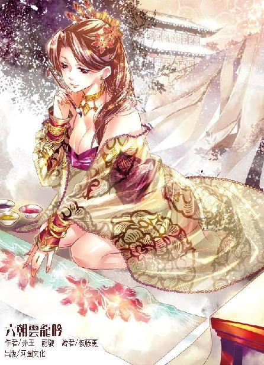

第38集·西湖鏖斗
临安篇（7/10）
出版日期：2012-10-04
【本集内容简介】
程宗扬大胆潜入明庆寺，欲探查梦娘的真实身份，却被深藏不露的老太监强行制伏。让程宗扬在惊恐之余倍感讶异的是，太皇太后手腕上那条有着皇冠图案的“手链”……
小瀛洲上杀机密布，程宗扬决定以己为饵，先除西门庆！不料螳螂捕蝉、黄雀在后，有大貂珰协力的程宗扬，真能扳倒神秘莫测的剑玉姬吗？
※ ※ ※ ※ ※

封面人物：梦娘（赵媛）
“初八日卯时一刻，太皇太后、皇太后銮驾出大内，沿途由禁军护送。六刻至明庆寺，稍事休息。辰时一刻，叩拜寺内宝塔。四刻，至五岳楼祈福放生。巳时一刻，入大雄宝殿恭迎佛像。三刻，安座金盆、上香、礼佛。五刻，备五色香汤浴佛。七刻，绕佛祝圣。午时一刻用斋饭，四刻启驾返宫。銮驾及寺内由皇城司及大内守卫。自卯时起，至午时末，沿途及明庆寺周围两里禁止百姓通行。”
程宗扬放下纸张，笑道：“难为你写得仔细。”
孙天羽毕恭毕敬地说道：“叔叔的吩咐，小侄自当尽力！”
姓孙的虽然够乖巧，一句话都不多问，但漏洞不能不补。程宗扬叹了口气，一脸头痛的表情，半是随意半是为难地说道：“你也知道，原来的武穆王府如今正在拆迁，王府又紧邻着明庆寺，万一浴佛法会上那些工匠惊扰了宫里的贵人，我这罪过可就大了。”
孙天羽恍然大悟，满脸敬佩地说道：“还是叔叔想得周到。”
双方戏演到这儿就差不多了，程宗扬喝了口茶，“当日城内的大火，查出原因了吗？”
孙天羽斟酌着说道：“这件事不是侄儿经手，但听说是一个小官熬药时引燃了厨棚。幸好贾相爷处置得当，才没酿成大祸。城中民居虽然烧了一些，但各处官衙都没波及，只烧了太医局几处房舍。”
当日的临安大火程宗扬心里一直在嘀咕，会不会是黑魔海做的手脚？他在宫中与高俅通过风，自己又一堆的事情要处理，这事便一直由高俅在查，但没有查到什么蛛丝马迹。现在听来只烧了太医局几处房舍，要紧的六部、大内都没有波及，看来自己有点儿疑神疑鬼了，什么事情都往黑魔海身上想。
孙天羽走后，林清浦提醒道：“此人心术不正，不宜多用。”
程宗扬道：“虾有虾道，蟹有蟹道，小人也有小人的用处。只要防着他别去害人便是。老四那边有消息吗？”
“祁执事亲自把张侯爷一行一直送过沅水，后面这一路顺风顺水，大概四月中旬能到临安。”林清浦道：“易彪一行虽然启程晚了几日，但昼夜兼程，听说已经赶在张侯爷等人前面。”
“建康方面有消息吗？”
林清浦摇了摇头。
程宗扬叹了口气，云如瑶那边至今没有半点音讯，她身体本来就弱，如今又伤了元气，万一寒毒发作，不知道能不能撑下来。云秀峰带人返回建康，以他的交游、手段，云家的安全倒不是问题。只可惜自己分身无术，无暇亲赴建康，向云老哥他们磕头赔罪。
程宗扬收拾起杂乱的心绪，聚精会神地计算着账目，直到日色偏西才放下账册。
武穆王府从拆到建，少说也得一年才能完成，如今程氏钱庄仍在户部提供的陋巷里。不过这些天来，身边的陋巷几乎成为闹市，除了临安本地以外，还不断有各处州府的商人赶来询问如何兑换纸币。
程宗扬原以为小额纸币难以推行，第三批一百万金铢的小额纸币只是用来换取武穆王府的地产，推给官府就不再操心。谁知蔡元长半逼半送又把皮球踢了回来，强行抵押了三十万金铢的现款。
正棘手间，秦桧在半闲堂随便放出一则流言，不仅把这批纸币兑换得干干净净，连以前收回的纸币也兑出不少。死奸臣这等翻云覆雨的手段，不仅自己暗中拍案叫绝，连贾师宪都心生忌惮。
至此程氏钱庄三批纸币全部发行完毕，由于第三批是直接在钱庄兑换，所有现金都进入钱庄的金库。随着晴州的粮款陆续运抵，刚才盘点账目，折为金铢计算，自己手中的现金总计近一百八十万，纸币仍有五十七万，另外还有筠州分号储备的五万金铢。
在外面流通的二百四十三万纸币中，六十万握在云氏手中，散落在市面上的流通纸币一百八十三万，与储备的现金数目接近一比一，情况不是一般的乐观。即使出现最坏的局面，所有流通纸币全部兑现，自己也有足够的现金撑下来。
但从负债角度计算，四十万是宋国官方提供的本金，三十万是云氏的借款，还有蔡元长把纸币抵押给自己的三十万分期付款。扣除负债保留本金的话，自己相当于用一百二十万现金支付两倍的纸币。
虽然情况还算乐观，但这是把自己全部资本都投入钱庄的结果，一旦钱庄出现风波，自己能保住多少利润尚未可知。
最薄弱的环节也许在云氏的态度。除了自己欠云氏三十万金铢的现金，云氏手中还有六十万金铢的纸币，如果云氏与自己翻脸，一下就能拿走自己九十万金铢的现金，等于自己资本的一半。这个可能性虽然很小，但也不能说没有。
另一方面的隐患也不能不戒备，既然秦桧能用流言把纸币全推出去，再有一则纸币无用的流言出来，说不定全临安的人都跑来挤兑。到那时，只要有一个金铢的现款兑换不出，程氏钱庄的招牌就砸了个粉碎。
为了体现纸币的信用，程宗扬让云氏暗中操控的两家粮行、自己掌控的通源行，以及死奸臣赶在火灾时抢购的建材物品，出售时全部挂牌接受纸币。同时对工地上招募的工匠承诺，工钱每日一结，但一半由纸币支付——别说如今纸币在临安正吃香，就算纸币无人问津，只要每日干完活，能用这些纸张从粮行换来实打实的粮食，工匠们也没有什么不乐意的。
程宗扬甚至还和明庆寺的和尚们商量，庙中的功德钱、香火钱都接受纸币，由钱庄负责兑换。如果明庆寺肯把收来的钱铢存在程氏钱庄，钱庄提供给寺庙的利率为年息三分。明庆寺也不含糊，狠狠收了一笔好处费，答应了接受纸币，存款的业务却没能谈拢——明庆寺自己也往外放贷，利率更是高达年息五成。如此豪迈的手段，让程宗扬对这帮放高利贷的黑心和尚愈发刮目相看。
如今临安的居民拿到纸币，可以去粮行买到粮食，或者在城外买到急缺的砖瓦建材，还能到明庆寺买来香纸火烛捐献功德。各处商号把收来的纸币拿到程氏钱庄兑换成现款，程氏钱庄再用工钱的方式把一部分纸币释放出去——虽然整体规模极小，但起码这些纸币已经开始流通，越多的人开始接触纸币，也就越能体会到纸币带来的方便。
程宗扬抱肩看着窗外的暮色。从二月十七日自己到临安，不足两个月时间，程氏钱庄初具雏形，屯田司员外郎、宝钞局主事两顶官衔，太师府、太尉府、皇城司、大内、六部官员……各处关系该摆平的摆平，该拉的拉上，还白捡了一个通源粮行……让旁观者看来，简直是高歌猛进，无往不利。然而如此顺利，却让程宗扬隐隐生出一丝不安。
自己一个失业的废柴白领就能在六朝呼风唤雨，以前那些穿越前辈怎么个顶个的那么倒霉呢？岳鸟人手握星月湖大营那样的强军，照样被雷劈得无影无踪，自己脚下会不会也是流沙？转眼就将自己吞噬得干干净净？
自己手边最靠得住的势力，要数星月湖大营，其次是殇老头、云家和高俅。最靠不住的，肯定要数宋国官方。从风传老贾出事前后，官场态度的变化就能看出，别看现在贾师宪、蔡元长、韩节夫、史同叔等人和自己称朋道友，一旦卸磨杀驴，绝没有一个手软的，能让自己光屁股，绝不会给自己留条裤衩。相反，如果能在朝中稳住脚，像梁师都、黄氏那样自愿带着家产甚至家眷投效的都不知有多少。可惜自己只是个客卿，出身不正，想站得稳，还需要更硬的靠山。
宋国最硬的靠山还不是宋主，而是进士头衔——每三年考一次，每次录取三百来人，自己能考中的机率和被雷劈了差不多。
程宗扬心里突然跳出个念头，宋主年过二十还没有娶正宫，不会是在等李师师吧？瞧他那张小白脸，倒和徽宗有七八分相似。如果真是徽宗，自己的公关经理出马，绝对是手到擒来……
程宗扬刚想到这儿，立刻在心里大摇其头，如果这位宋主真是徽宗，自己肯定把李师师藏得严严实实，连影子都不让他瞧见。
李师师不是云如瑶那样的账目天才，不过她外表看似柔弱，骨里子却倔强得很。自己刚才看的账目就是她用了两天时间，一笔一笔核算出来的。论起认真细致，比自己可强得多了。
程宗扬看了眼在内室翻看账目的李师师，禁不住又在心里摇了摇头。自己把她请进公司，不是让她当会计的。可惜别的东西自己又教不了，只盼着兰姑快些到临安来，私下里教教她风情，免得这块上好的白玉被自己耽误了……
“会之还没回来吗？”
林清浦道：“没有。”
王禹玉顷刻间失势落败，别人倒也罢了，秦桧倒比树倒猢狲散的王党还忙上几倍。这几日为着王禹玉往筠州赴任的事前后打点，整天出入王家，连钱庄的事也暂时放下了。
程宗扬道：“准备三万金铢，让冯大法送到户部，交给蔡侍郎。”
“是。”
冯源直到掌灯时分才回来，只带了一句话：“蔡侍郎已经清点过了，他说承公子的情，明日请公子去家中赴宴。”
自己还兼着宝钞局的主事，属于户部的下设机构，不过宋国上下都把宝钞局看作临时机构，连衙门都没设，只是给程宗扬一个官方的名义而已。说起来蔡元长也算是自己的顶头上司，请自己去家里赴宴，着实够给面子。
看到这批纸钞顺利变成钱币，蔡元长恐怕肠子都悔青了。可是纸币已经到了钱庄手里，想再赎回来就没那么容易了。况且为着明年能继续发行纸币计较，户部也不好随意就朝令夕改。那么蔡元长找自己干嘛？又变着法子想从自己这儿掏钱吗？
程宗扬略一犹豫，便道：“让人回蔡侍郎，明天我一定去。”
※ ※ ※ ※ ※
蔡府在涌金门外，离西湖不远。蔡元长刚由郎中升任侍郎，府邸规模并不算大，但府中建筑精巧，陈设雅致，一砖一石用料都极为扎实，富贵而不外露，显然蔡奸臣在户部这些年没少捞钱。
蔡元长自重身份，没有出门迎接，等程宗扬进来，他在内院的檐下远远拱了拱手，笑道：“程主事，多谢你为朝廷分忧啊。”
程宗扬回了一礼，笑道：“这是在下份内的差事，怎敢让侍郎道谢？”一边说，一边让人把备好的礼物送进内院。
蔡元长哈哈一笑，亲自下阶把住程宗扬的手臂，请客人入内。
程宗扬来时反复想过，蔡元长既然在家里设宴，谈的肯定不是公事，私事除非就是通源行。
果然，双方入席，酒过三巡之后，蔡元长便主动问起通源粮行的生意。此前因为江州之战，粮价上下波动，程宗扬固然赚得盆满钵满，通源行这些粮行却没捞到多少好处，虽然没有赔钱，但粮价飞涨，成本上升，占用了不少资金，通源行又贪图粮价飞涨的暴利，因此才从官府挪用钱款来炒粮。
通源行背后的宁王和梁家都是消息灵通之辈，对朝局了如指掌，原以为能趁此机会大捞一把，谁知太乙真宗突然表明态度，导致局势急转直下。眼见粮食生意一败涂地，再加上梁家失势，户部清查账目，宁王落井下石，抢先提走了铺中的现金，把个烂摊子扔给梁家。这边程宗扬露出接手的意思，宁王乐得作个顺水人情，痛快地把股份让给了盘江程氏。
程宗扬接手之后，先从云家的云海行购得一批粮食，然后大笔注入资金，才让通源行转危为安。按照私下里的约定，蔡元长不再追查通源行的账目，条件则是白拿四成的利润。即使只为私下的利益考虑，蔡元长也得让通源行的生意越来越好。
这会儿蔡元长问起粮行的生意，程宗扬当即大倒苦水。反正通源行当时都已经惨到老板娘要去卖身，自己把局面说得再困难十倍也没有多少出格。
蔡元长沉吟片刻，徐徐道：“王师江州败绩，损失无算，为免国中震动，朝廷有意购买一批粮食，补充各地的常平仓。”
程宗扬立刻意识到这是一个绝佳的机会，宋国官方要通过各地粮行进行粮食储备，如果能成为官方的供应商，还用担心什么销路？
但程宗扬关心的还是最要紧的一个问题，“钱从哪里来？”
“晴州的商税。”
程宗扬一头雾水，“晴州的商税不是已经征过了吗？”
他记得晴州每年向宋国朝廷支付二十万金铢的固定商税，作为晴州实行事实自治的条件。二十万金铢不过四十万贯，相比于晴州的商业规模，这点钱真不算多。
蔡元长举杯与他一碰，悠然道：“贾太师与晴州总商会交涉，由总商会一次支付九十万金铢，作为今后五年的商税。”
程宗扬脑中顿时跳出来个词：割肉补疮！贾师宪先从晴州大笔借贷，接着发行纸币，现在又把今后五年的商税一并收来，只要能应付眼前的危机，往后哪管是不是洪水滔天。
程宗扬忍不住道：“陛下答应了吗？”
“已经御批了。”
程宗扬不禁又同情起宋主来。前面一个岳鸟人，用十二道金牌把这个小正太勒索得一干二净，后面又来了个贾师宪，三下五去二就把宋国的家当败掉一大半，到时候就算干掉老贾，宋国这摊子也烂得差不多了。说起来晋国的陛下还是白痴，都没他这么惨的。
都是自家的生意，双方也没有再搞什么花样，直接在席间敲定，由通源行作为临安常平仓的唯一供应商，三个月内向仓内提供六十万石的粮食，每石价格十二银铢，总计三十六万金铢。随着江州之战的结束，粮价回落已成定局，这个价格定得不是一般的高。但宋国朝廷如果要求降价，主管户部的蔡元长肯定头一个不愿意——降一文就是从他口袋里往外掏钱。
谈罢生意，双方都轻松了许多，蔡元长亲手夹起一箸肉干，笑道：“来，尝尝厨下做的黄雀鲊！”
程宗扬尝了一口，这东西自己还是头一次吃。感觉是用酒酿成，咸香可口，滋味奇佳，不禁赞道：“好味道！”
他夹起一片，审视着道：“这是麻雀？怎么做的？”
蔡元长心情正好，笑道：“黄雀比麻雀略小，捕来后用酒洗净拭干，装入坛中。加入麦黄、红曲、花椒、精盐、葱丝等物，层层铺实，然后用粽叶封好。待坛中卤出，则倾去其余，加酒浸渍。黄雀肉性大温，食之壮阳补气。程主事若喜欢，舍下正好多做了几坛，一会儿让人送到府上。”
“那我就不客气了！”
双方哈哈大笑。这场小宴虽然没有歌舞伎乐，但双方一拍即合，算得上宾主尽欢。
眼看天色将晚，程宗扬起身告辞。蔡元长亲自送到檐下，又谈笑了几句，这才分手。
程宗扬挥挥身上的酒气，正要登车，却见冯源脸色发青，神情紧张地盯着旁边一辆马车。
程宗扬不动声色地上了车，然后把冯源叫上来，“怎么了？撞鬼了？”
冯源咽了口唾沫，“程头儿，我刚见着一个人……”
他凑过来，在程宗扬耳边低声说了几句。
程宗扬霍然起身，“你没看错吧！”
“错不了！”冯源道：“老豹也看到了。”
“老豹！”
豹子头把头伸进来，“何事？”
“你们刚才见到一个拿折扇的公子哥儿进去了？”
“然也。”豹子头道：“吾认得，乃西门大官人。”
程宗扬一点酒意顿时清醒过来，西门庆竟然堂而皇之地出入蔡元长府上，难道蔡元长也和黑魔海有牵连？
“不对！”
如果蔡元长是黑魔海的人，他们避人耳目还来不及，怎么可能公然出现？还让自己见到？莫非这是剑玉姬故意在对自己示威？
程宗扬沉住气，皱眉思索半晌，开口道：“走——”
刚说了一个字，他忽然闭上嘴，双眼紧盯着蔡府大门。
一个遍体风流的公子哥儿潇潇洒洒从大门出来，他穿着白色的锦袍，戴了一顶瓦楞帽，手中一柄大红洒金的折扇，一双桃花眼顾盼间勾魂夺魄，正是西门庆那狗贼！
程宗扬隔着车窗淡绿色的玻璃冷眼旁观，只见蔡府的家仆奔前走后，对西门庆执礼殷勤，态度比见着自己这个官儿还亲热几分。西门庆也似乎在府上常来常往，与众人熟不拘礼。
蔡家那几名仆人一直把西门庆送到马车边，各自得了一份厚厚的赏钱，才欢天喜地地离开。
西门庆掀开车帘似乎要登车，忽然放下帘子，晃悠悠走了过来。他远远就把折扇插在领后，双手抱拳，躬身深施一揖，然后笑嘻嘻道：“果然是程兄！久违久违！”
既然已经露了行藏，程宗扬也不再躲藏，他抬手推开车窗，冷笑道：“大官人，咱们离上次见面也没几天吧？”
“一日不见，如隔三秋。何况咱们兄弟可有几日没见了呢？”
对于当日在野猪林的交手，西门庆似乎没有半点芥蒂，一边说一边还挑了挑眉毛，一副谈笑风生的派头。
这狗贼的修为不在自己之下，他既然敢在这里等着自己，多半还有后手。只凭冯源、豹子头和自己，想干掉他并不容易。
“大官人还真是悠闲，天天跟在我马车后面吃灰吗？”
“贤弟可是想岔了。”西门庆毫不介怀地笑道：“愚兄只比贤弟晚来一步，听说贤弟正与干爹宴饮，没敢打扰，没想到出门又遇上，果真有缘。”
程宗扬有心骂他个狗血喷头，听到“干爹”二字不禁一愣，半晌才道：“蔡侍郎是你干爹？”
西门庆笑嘻嘻道：“让程兄见笑了。”
程宗扬心底升起一股寒意，似乎看到剑玉姬正带着一抹若有若无的微笑，在棋盘上轻轻落子。
自己在临安的粮战，正是因为纸币才大获全胜，转手间就拿到了一般粮行几十年都赚不到的钱。而同样是因为纸币，自己所有的利润全在钱庄上。如果蔡元长是黑魔海的人，他一手把持户部，自己这一番辛苦，就等于全都白白给黑魔海作了嫁衣。
西门庆神情淡定，摇扇笑道：“不知程兄何时有空，大家一起喝杯茶呢？”
程宗扬冷静下来，“是剑玉姬让你来的吧？”
西门庆没有承认也没有否认，只笑道：“程兄既然是生意人，总不会拒人于千里之外吧？”
程宗扬忽然一笑，“这几日忙东忙西，也没顾得上向仙姬道谢。这样吧，今天是初三，初八、初九、十一、十二……四月十二，程某在西湖宴请两位如何？不知大官人府上何处？到时我定下地点，好通知大官人。”
“好说。”西门庆痛快地拿出一封竹制的名刺，笑道：“如此，愚兄便静候佳音了。”
程宗扬放下车帘，马车随即起步。他拿起西门庆递来的名刺看了一眼，随即交给冯源，“这狗贼居然还有公开的身份！让皇城司去查！”
“是。”
“通知林清浦，立即联络彪子，让他们加快速度，四月初十之前务须赶到临安！”
冯源应了一声，然后忍不住道：“程头儿，你真要给他们设宴啊？”
“没错。”程宗扬冷笑道：“鸿门宴！”
※ ※ ※ ※ ※
回到翠微园，远远便看到一个白白嫩嫩的皮球滚出来。高衙内连蹦带跳，一脸欢喜地叫道：“师父！你可回来了！”
程宗扬跳下车，“怎么？衙内今天得闲了，来我这儿转转？”
高衙内叫屈道：“我整天忙得要死要活，哪儿有闲空啊？”他扳着指头道：“就拿今天说吧，上午忙着去江上钓鱼，蔡老二把丰乐楼的大厨叫了来，在江上现钓现杀现煮尝鲜！钓完鱼去北场看的鞠赛，百锦社那帮废物，害得我输了好几百金铢。小梁子输得比我还惨，在厢房拿着南苑一支花撒气，倒让我们瞧了个乐子。晚上兄弟们原本要去北瓦子，徒儿念着好几天没见师父了，特意来给师父你请安的。”
“行啊徒儿，难得你有这份孝心。”
“那是！”高衙内涎着脸道：“师父，要不要徒儿给你捶捶腿？”
“免了吧。”程宗扬道：“你旁的还有什么主意，赶紧说，我这儿正忙呢。别说你没有啊。”
高衙内嘿嘿笑道：“师父，那天那个粉头是哪个行院里的？我们兄弟找遍了都没找到。”
“怎么？上瘾了？”
“不瞒师父说，徒儿也算阅女无数，那么骚的还是头一次见。那大白屁股扭的，啧啧……”
程宗扬笑道：“那是个私娼，你们去哪儿找啊？我这几天不得闲，改天有时间，让她去找你。”
高衙内喜笑颜开，“多谢师父！”
打发了高衙内，程宗扬先来到静室。
林清浦道：“刚得到消息，秦大貂珰伤势沉重，已经上札子请求解除军职，回临安休养。”
“有多重？”
“具体伤势不清楚。”
“哪里的消息？”
“明庆寺那位线人的。”林清浦道：“可以确定，秦大貂珰是与萧侯交手时受的伤，但此事关乎晋宋两国机密，只有军方高层和宋主等数人知晓。”
消息既然出自高俅手中，真实度可以确定。萧道凌是晋国大将军，秦翰是宋国重将，他们两人战场相逢的消息传出，就等于是晋宋两国交锋，眼下两国朝廷各有难处，只好都装糊涂，谁也不敢揭破。
程宗扬摸着下巴道：“萧侯过江来打落水狗，我都觉得蹊跷，难道是专门来为儿子出气的？”
林清浦一笑，“想必如此。”
小狐狸在江州城外险些被秦翰一掌打死，萧侯就这一根独苗，要能忍住气才是怪事。他这一记落水狗正打到节骨眼儿上，牵制了宋军最精锐的选锋营，让江州顺顺利利劫走宋军的辎重，自己也赚得盆满钵满。这些老家伙的手段一个比一个精明凶狠，让自己压力不是一般的大。
秦翰回临安，倒是一桩麻烦。江州时自己虽然露过面，但都是几千几万人的群殴，一般宋军士卒倒也罢了，在临安碰面的机会微乎其微，即便撞见也未必能认出自己来。秦翰却是与自己实打实地交过手，像他这种高手，只要看过一眼，自己就算天天戴着面具，只怕也会让他认出来。
幸好传来的消息说秦翰的伤势沉重，难以疾行，即使宋主允准，也要两三个月才能到临安。到时自己随便找个由头出去避上几个月，先给小狐狸找到赤阳圣果，再让高俅想办法把这个碍眼的秦太监远远踢到边远州郡，想来也没有多少碰面的机会。
程宗扬顺手倒了两杯茶，递给林清浦一杯，自己一饮而尽，然后道：“会之呢？”
“仍在王家奔走。”林清浦道：“王禹玉虽然被贬，但宋主是念旧之人，顾及老臣体面，听说还赏赐了不少物品，应无大事，这两日也该回来了。”
林清浦主管各处情报，有童贯这个耳目，关于宋主的消息也极为灵通。王禹玉完全是被贾师宪赶出去的，宋主虽然不好违抗太皇太后的懿旨，心下的不情愿可以想象，料想王家不至于和其他失势的人家一样倒霉。
“等会之回来，让他来见我。”程宗扬道：“我去见见师师姑娘。”
“师师姑娘尚在钱庄，仍未回来。”林清浦停顿了一下，“却有两位客人来找师师姑娘。”
程宗扬放下茶杯，“谁？”
“先是师师姑娘的尊亲，方才是梁家的夫人。”
※ ※ ※ ※ ※
阮香琳已经在翠微园内院等了一个时辰。自从贾师宪的地位转危为安，她的态度也生出微妙的变化，没有再强拉女儿回家，但她也没有放弃把女儿嫁入太尉府的大计，隔三差五便来园中劝说。说到底，一个刚在临安立足的外地客商，怎么及得上太尉府的赫赫权势？
女儿的婚姻关系到夫妻俩后半生是坐享荣华富贵，还是继续在江湖中担惊受怕，由不得阮香琳不上心。虽然明知道女儿是在躲自己，她也耐着性子，在旁边一间装满药材的房间慢慢喝着茶。
帘外环佩轻响，一个盛妆妇人掀帘进来，见到阮香琳在坐，双方都是一愕。
接着阮香琳站起身，守礼恭谨地向来人福了一福，“民妇见过梁夫人。”
黄氏露出一丝不屑的眼神，似笑非笑地说道：“原来是李家镖局的娘子。”
威远镖局常年在城中权贵门下奔走，两人早已是见过面的，却没想到会在此地相逢。梁师成未倒台时，梁家也是临安城中有名的大户，现在虽然不如往日，但梁师都暗中走了程宗扬的门路，保住了官位，黄氏身为官眷，又有诰命在身，自然看不起阮香琳这等民妇。
阮香琳虽然是成名的侠女，但双方的身份地位上差了一大截，一边连忙让出座椅，一边赔笑道：“梁夫人请坐。”
黄氏毫不推让地坐下来，四处张望一番，然后回过头，有一眼没一眼地打量着阮香琳。
阮香琳笑道：“多日不见，梁夫人气色比以前更好了呢。”
黄氏笑吟吟道：“妾身这点容貌，怎比得了李家镖局的娘子呢？我家孩儿前些日子还在夸你呢。”
阮香琳脚下微微一晃，脸色顿时变得惨白。
黄氏丝毫不掩饰自己对她的鄙薄，嘲笑道：“李娘子这等标致的人材，又是习过武的，难怪人见人爱呢。”
阮香琳勉强笑道：“梁夫人说笑了。”
“我家孩儿对你赞不绝口，哪里是笑话你呢？”黄氏随意地吩咐道：“走得口渴，斟杯茶来吧。”
阮香琳被她揭破隐私，一时间羞愧得无地自容。听到她的吩咐，只好低着头斟了杯茶，双手奉上。
黄氏接过茶杯，笑道：“吃了你的茶，便是一家人了。李家娘子，往后多往家里走动。”
宋国的风俗，儿媳过门要给婆婆奉茶，黄氏这番话讥讽意味十足，可阮香琳一句也不敢回，只低着头，勉强道：“不敢。”
梁家失势，当日巴结黄氏的官眷这些天连个影子都没有，世态炎凉，让黄氏心里也有气。这时见阮香琳在园里出现，以为她也是来投程主子的门路，黄氏半是鄙夷、半是嫉妒，有意在她面前逞威风，把茶杯一放，呵斥道：“你一个走江湖的妇人，我让你来家里，是多大的脸面？你还给我摆什么脸色？”
阮香琳脸上时红时白，攥着衣角的手指微微发抖。
黄氏冷笑道：“你莫非是见我们梁家败落了，便看不起我们梁家？想当日多少人来巴结我，哪里轮得到你？”
黄氏抓住她的把柄，当下一通奚落，说得阮香琳屈辱难言，却丝毫不敢撕破脸面。万一黄氏将当日的丑事宣扬出去，自己也不用做人了。
黄氏呵斥半晌，拿起茶水喝了，将杯子往桌上一扔。阮香琳忍下羞恼，拿起瓷壶，重新添满。
黄氏扬起脸，对她不理不睬，冷冷道：“莫非是个哑巴？”
阮香琳忍气吞声地说道：“请夫人用茶。”
黄氏翻了她一个白眼，“你什么身份？也配站着敬茶？”
阮香琳羞愤之余，心下升起一股怒气，她在江湖中原本也是不让须眉的女中豪杰，哪里受过这般屈辱？当即就想摔了茶杯，但转念想到梁家的权势，不由得一阵气短，甚至还生出几分讨好的心思，暗道：便是受得一时委屈，能巴结上梁家，给自家相公求得一官半职也好。
阮香琳想着，双腿不由自主地弯了下去。她跪在黄氏身前，双手奉上茶杯，低声道：“夫人，请用茶。”
黄氏得意地接过茶杯，忽然外面一声咳嗽，一个人掀帘进来。
黄氏抬眼一看，顾不得阮香琳就在旁边，连忙起身，赔笑道：“程爷，请安坐。”
阮香琳修为原本不俗，但羞惧之下，竟没听到丝毫声息，自己向黄氏跪地奉茶的一幕被人看了个一清二楚，心下又是羞怯又是惶恐，急忙起身躲到一旁。
程宗扬面无表情地坐在椅中，黄氏连忙拉起衣袖，亲手斟了茶，赔着笑脸奉上，“程爷，请用茶。”
阮香琳惊疑不定地看着程宗扬，完全不知道他一个外地商人，怎么会让黄氏如此曲意奉承。想起方才的尴尬，阮香琳脸上一热，顿时面红过耳，哪里还敢再停留，连忙转身离开。
程宗扬只当没看见，问道：“案子结了吗？”
黄氏笑道：“托程爷的福，拙夫那点事已经在刑部结案了。”
“好事嘛，你们家这顶乌纱帽算是保住了。”
黄氏抛了个媚眼，“都是程爷捎了话，刑部主事的史侍郎才肯高抬贵手。”
“难怪有心情打扮得这么俊俏，原来是喜鹊登枝，有好事了。”
黄氏媚眼如丝地说道：“奴婢这一趟，是特意来谢程爷的。”
程宗扬拿着茶杯晃了晃，然后举了起来。黄氏早已是调教过的，不等他开口吩咐，便嫣然一笑，扬首张开红唇。
程宗扬手掌微微一倾，茶水银线般淌入黄氏口中，在她唇舌间流动着，星星点点溅在她鼻尖和粉颊上。不多时，黄氏的小嘴便被灌满，茶水从她唇间溢出，顺着她的下巴流入颈中，然后沿着胸前的曲线流入衣襟。
程宗扬一手拉住她的衣领，往下一扯，黄氏的华裳被扯到腰间，两只高耸的雪乳立刻跳了出来，露出上身白生生的肌肤。竟然连贴身小衣都没有穿，剥去外衣，里面便赤条条一丝不挂。
黄氏眉眼含笑，一边扬首用唇舌接住主人倒下的茶水，一边双手抚住雪乳，用淌下的茶水洗着乳肉，又捻住乳头，妖媚地用玉指揉洗着乳尖。
一杯茶倒完，程宗扬把茶杯扔到桌上，望着眼前媚艳的妇人。对于黄氏，他有一分怜悯，三分肉欲，倒有六分鄙夷。怜悯是梁家出事，却让一个妇人抛头露面，四处寻找门路，甚至献身投靠。鄙夷是看不上这妇人的势利与淫浪，对着身份不及她的阮香琳和魏家娘子百般羞辱，转眼又对自己百般讨好。
别的妇人做下那日的丑事，哪里还有脸面登门？黄氏却只忍了三天，便又来到园中。反正丑事已经做下，不若图个快活。她姿色原本不差，如今抛去体面，在床上比娼妓更淫浪几分，倒让程宗扬尝了个新鲜。
黄氏咽下口中的茶水，一边用指尖抹去唇瓣上的水迹，一边骚浪地看着他。
不用主人吩咐，黄氏又倒了一杯茶，双手举起，奉给主人，然后像匹大白马一样趴在地上，褪下长裙，把一只白光光的大屁股翘到主人面前，媚声道：“奴婢嘴巴、舌头、奶子都洗过了。下面两只肉洞，请主子赐茶。”
茶水倾下，那妇人一手扳着雪臀，一手伸进臀沟，借着温热的茶水，玉指在肉缝儿间揉弄着，将本来就干干净净的屁眼儿和玉户洗得愈发水灵。
六朝没有保温瓶，富贵人家一般用的夹层瓷壶，因为没有抽尽空气，保温效果一般，这会儿浇在身上，只是微烫。黄氏一边洗，一边娇笑道：“奴婢洗过的几处，都是主子要用的。不知主子这次是从下往上用，还是从上往下用？”
黄氏一边洗着身子，一边说着淫词浪语，只待主人情动，便在主人身下婉转承欢，来讨好主人。谁知第二杯茶堪堪倒完，忽然“哗啦”一声，旁边的窗户猛然打开。
黄氏扬起脸，只见阮香琳正站在窗外，虽然满面通红，眼睛却闪亮如星。
黄氏已经剥得一丝不挂，程宗扬倒还是衣冠楚楚，他一手推着窗子，笑道：“阮女侠原来还没走啊。”
程宗扬虽然在房里狎戏这妇人，心神却全放在门外。他现在是五级坐照境的修为，比阮香琳还高出一筹，只凭耳力就听出阮香琳离开后并没有走远，自己甚至能从她呼吸的节奏，听出她的惊疑和那种舒了口气般的放松。
阮香琳此时已经完全镇静下来，她含笑看了黄氏一眼，“梁夫人放心，今日之事，民妇只当没有看到。”
黄氏先是花容失色，接着又露出媚意，她身子一扭，抱住程宗扬的小腿，把半边胴体贴在他身上，娇声道：“便是看到又如何？若有人敢乱嚼舌头，程爷动动手指，就让你们那家小镖局一块瓦片都剩不下来。”
阮香琳玉容微变，一言不发地转身离开。
黄氏啐了一口，“下三滥的娼妇！”
程宗扬本来想给阮香琳解围，露出黄氏的把柄，免得这荡妇在她面前盛气凌人，谁知黄氏只吃了一惊，却半点不怕，这般泼辣的淫妇难怪能支撑家业。
黄氏出了口气，然后笑道：“程爷放心，这娼妇有把柄在奴婢手里，谅她也不敢乱说。”
程宗扬把衣裙扔到她身上，没好气地说：“起来吧。人都走了，你还趴着干鸟啊！”
黄氏却不肯起身，用双乳在他腿上蹭着，媚声道：“程爷……”
程宗扬在她身上试过才发现，殇侯仿制的药片与麻古和摇头丸有八分相似，服用之后身体失去控制力，不由自主地摇头、抖动，同时具有强烈度和长效能的致幻、催情效果，至于心理成瘾，看黄氏的反应就知道效果不凡。区别在于，殇侯的药物在生理上不会出现毒品通常的戒断反应，没有停用后出现的身体不适。至于长期使用会不会对身体产生负面影响，那只有天知道了。
对于主动送上门的黄氏，程宗扬只是抱着不吃白不吃的心理尝个新鲜，并没有把她放在心上。说到底，黄氏图的是自己的钱财权势，自己用的是她的丰乳肥臀，双方各取所需，公平交易，谁也不对谁多一分责任。
※ ※ ※ ※ ※
一张小心褶起的素纸上，细细写满字迹：
西门庆，年二十九，清河县人氏，现居临安府荷花桥南。身长六尺一寸，面白无须。通文字，诗赋尤佳。经吏部核查，家世清白，并无作奸犯科诸事，依律授提点刑狱司副提刑，从六品。
后面小字注明：纳捐得官，未实授。
“这是从吏部抄录的档案。”林清浦道：“后面是皇城司从各处搜罗来的消息，内容虚实难辨。”
程宗扬接着往下看。皇城司的情报来源复杂，有说西门庆为人乐善好施，是乡中有名的善人。有说西门庆性喜渔色，专在乡间欺男霸女。有说他家中累世开办生药铺，家业殷实。有说他在县外的产业尚有当铺、车船行，富甲一方。其中有一条提到，两年前西门庆便拜入户部蔡元长门下，认蔡元长当了干爹。他之所以能买到提刑司的官职，正是有蔡侍郎的帮忙。
程宗扬把情报递给刚刚赶回来的秦桧，“瞧瞧，西门大官人这份履历比我那份捏造的可强多了。从籍贯、学识到家世，多全啊，连官职都比我高半级。”
秦桧一边看一边说道：“既然是两年前，那么西门庆早已拜在蔡侍郎门下，并非窥破公子的手段，才临时应变。”
“我怕的就是这个。”程宗扬道：“天知道剑玉姬在暗处究竟布了多少局。她现在要是动手，就凭我们手头的实力，恐怕防不胜防。”
程宗扬真正担心的是高俅。陆谦在太尉府潜藏多年，显然黑魔海已经对这位当朝太尉生疑。阮香凝失去记忆之前，曾经对高衙内使用瞑寂术，问出高俅父子与岳鹏举的关系。剑玉姬出手抹去阮香凝的记忆，把她当礼物送给自己，一大半倒像是在示威，警告自己黑魔海已经拿到了这桩天大的秘密。
高俅的身份敏感到自己连对秦桧都不敢说，一旦他与岳帅的瓜葛暴露出来，自己在宋国最大的依仗立刻就烟消云散。剑玉姬握着这个杀手锏，却一直没有使用，肯定不会是好心替自己保密，唯一的可能就是在等待利益最大化的时机。
还有蔡元长，这个甚至比高俅更要命，如果蔡奸臣是剑玉姬的棋子，自己就等于主动把经济命脉交到黑魔海手中。
秦桧思索片刻，“蔡元长若是巫宗的布局，剑玉姬定不会轻易亮出来让公子见到。实则虚之，虚则实之，西门庆今日公然露面，反而证明蔡元长并不知晓他的真实身份。”
“那西门庆为什么要亮出他与蔡元长干父子的关系？”
林清浦道：“剑玉姬这一着，多半是隔山震虎，好让公子疑神疑鬼，自乱阵脚。”
秦桧抚掌道：“正是如此！”
程宗扬想了半晌，“你们说的没错，是我关心则乱。蔡元长如果是剑玉姬安排的棋子，无论如何也不可能这会儿就把底牌亮给我看。这贱人是吓我呢！”
判定蔡元长与黑魔海无关，程宗扬悬在心头的大石终于放下一半。
“剑玉姬和西门庆贼心不死，还想拉我谈生意。我把时间放到四月十二，到时易彪和我直属营的三十号人马已经能赶来临安。兄弟们，咱们商量商量，这一趟怎么让他们有来无回！”
秦桧摩挲着手指，缓缓道：“剑玉姬与西门狗贼是巫宗高层，即便家主手下豪杰尽出，要将他们一网打尽，也属不易。以属下之见，不若分而攻之。诱剑玉姬而攻西门，或诱西门而攻剑玉姬。”
秦桧的提案很现实，把剑玉姬和西门庆一并杀死固然美妙，但对程宗扬目前的实力来说，这个任务过于困难。
程宗扬目露杀气，沉声道：“你上次说，西门狗贼不是黑魔海的人——到底是怎么回事？”
“此事说来话长。公子知道黑魔海分毒巫二宗，毒宗宗主是鸩羽殇侯，巫宗之主则是秘御天王。”秦桧道：“当日武穆王扫灭巫宗，传言秘御天王死在岳鹏举手下。但事后君侯接到书信，方知教内高手死伤殆尽，唯秘御天王尚在，只是身负重伤，需觅地潜修。”
程宗扬皱眉道：“我听说从岳帅手下逃生的不到五人，现在知道的就有秘御天王、幽长老和剑玉姬。另外两个是谁？”
“据秦某所知，剑玉姬并非巫宗幸存者。”
“怎么可能？”程宗扬道：“你的意思是剑玉姬是这十几年间，巫宗新培养出来的？”
“巫宗与我毒宗向来不睦，此间情由，属下也难知其详。”
剑玉姬从没出过手，很难判断她的实力如何，但程宗扬推测，她的修为不在谢艺之下。如果黑魔海十五六年时间就能培养出这样一个高手，那也太可怕了。
剑玉姬身上的谜太多，一时也无法看透。程宗扬道：“接着说西门那狗贼，他和黑魔海是什么关系？为什么会太一经？”
“黑魔海分为毒巫二宗，但外界绝少有人知晓，二宗之外，尚有四宾。南北二宫，东方、西门。这四大世家与黑魔海休戚与共，南宫、北宫两家亲近毒宗，东方、西门则是巫宗至亲。四家累世都有子弟加入黑魔海，同时黑魔海也多有门下与四家通婚。西门庆不是黑魔海门下，正因为他是西门世家此代家主。”
“干！这狗贼居然是家主！”程宗扬道：“西门家有多少人？”
秦桧竖起一根手指，“仅此一人。他若加入巫宗，西门世家便绝嗣了。因此巫宗视西门庆如己出，待之却以宾礼。”
程宗扬原以为西门庆来头这么大，背后想必实力不凡，听到整个西门世家就他一个人，不禁失笑，“西门家人丁也太少了吧？”
秦桧摇了摇头，“西门世家论人丁原是四家第一，但当年一战，被岳鹏举屠灭无遗。西门庆生母乃巫宗高层，嫁入西门家为主妇，艳绝一方，后来死在岳鹏举手中，尸骸无存。”说着他压低声音，“据说是被先奸后杀。”
程宗扬表情垮了下来，难怪西门庆与星月湖大营仇深似海。岳鸟人干的这些混账事，活该他被雷劈。
林清浦道：“如此说来，西门庆虽非巫宗门下，但在教内地位极高，异日羽翼丰满，必成大患。剑玉姬则是外堂总执事，如能除去她，巫宗如断手足。以公子之见，当选何人？”
程宗扬摸着下巴道：“你们觉得咱们如果对付剑玉姬，有几成把握？”
林清浦把目光投向秦桧。
秦桧道：“两成。”
“西门庆呢？”
秦桧谨慎地说道：“五成。”
“那好！”程宗扬断然道：“咱们这一趟，先干掉西门狗贼！”
※ ※ ※ ※ ※
高俅摩挲着那根长近三米的猛玛牙，矜持中流露出一丝恰到好处的贪婪，演技炉火纯青。
“好象牙！好，好！”高俅满意地说道：“来人，将程员外送来的礼物好生收起来。”
太尉府的家人见惯了高太尉索贿纳贿的勾当，半点也未生疑，当下三名家仆小心翼翼地抬起猛玛牙，送进库房。
高俅笑道：“程员外，请到舍下喝杯茶。”
程宗扬满脸堆欢地跟着高俅进了内院。掩上门，高俅便卸下伪装，低声道：“什么事？”
“我想向太尉借件东西。”
“哪件？”
“屠龙刀。”
高俅眉头微皱，“出了什么事？”
“我要杀个人，但手上没有合适的兵刃。”程宗扬笑道：“放心，我只借用一天，用完就还你。”
屠龙刀的存在属于绝密，当日高衙内在陆谦的怂恿下作局陷害林冲，高俅不惜动用手下的禁军，也要将所有接触过屠龙刀的人一律灭口，可见高俅对此刀的重视。但程宗扬要对付西门庆，总不能拿几百个铜铢一把的钢刀和他的天魔伞对拼吧？
“此刀关系甚大。但对付黑魔海……”高俅沉吟许久，难以决断。
程宗扬道：“陆谦在府中多年，屠龙刀又在他眼前出现过，太尉与岳帅的关系，只怕黑魔海早已有所察觉。”
高俅忽然道：“你那天用的兵刃呢？拿来我看看。”
程宗扬从背包中取出那只剑柄，“实话实说，那天我纯粹是碰巧了。这东西在我手里也有日子了，一直不知道怎么用。”
高俅接过剑柄审视片刻，“这柄兵刃被人封印过。”
剑柄上的符印早已破碎，但以高俅的眼光，一眼便看出上面残存的气息。
“看刀柄的制式，应该是东瀛传来的。”
程宗扬讶道：“没想到太尉蹴鞠以外，对兵器也这么熟悉。”
高俅哼了一声，“老夫在军中数十年，你以为只靠陛下的圣眷就能坐到这位子上吗？”
当日高俅在白虎节堂突然发难，显露的修为至少在五级上下，虽然称不上超凡脱俗，但比起禁军那些名将也不逊色多少。能成为军方大佬，可不是只凭踢得一脚好球就能坐稳的。
高俅忽然“咦”了一声，“这剑柄是从哪里得来的？”
“一个东瀛忍者手中。”
“此剑绝非忍者所有。”高俅摩挲着刀柄的花纹，半晌长吸了一口气，“如果老夫没有看错，这是一柄无锋之兵！”
“无锋之兵？”
高俅没有答话，他握住刀柄，手中一震，空荡荡的刀柄蓦然射出一道电光。在高俅手中，刀柄上的电光闪烁的幅度更大，时间也明显更长。片刻后，电光散去，柄上凝出一道三尺长的刀身，形状与当日在程宗扬手上相似，颜色却是深青色。
高俅从架上摘下一把短刀，举刀一斩，那柄短刀应声而断。他竖起锋刃，端详片刻，然后从床头的暗格内取出屠龙刀。
两刀相交，这一次雷射战刀深青色的刀锋上被砍出一个缺口。高俅挥刀连斩几次，雷射战刀的刀身终于断开。断裂的刀身还未落地，整条刀锋都消失不见，只留下一个刀柄。
高俅气息微显散乱，他把刀柄递给程宗扬，“把真气全部注入其中。”
程宗扬这些天试过几次，已经驾轻就熟，当即屏息凝神，双臂猛地一展，将真气注入刀柄。
一道白光电射而出，在柄上吞吐跃动。高俅挥起屠龙刀，带着一股狂飙疾斩而下。程宗扬双臂剧震，犹如实体的电光传来一股凌厉无匹的寒意，冰丝般侵入经脉。
高俅收刀而立，屠龙刀上一个细小的缺口正迅速合拢。
程宗扬手中的刀柄电光收敛，凝成一道黑白相间的刀身。
高俅脚尖一挑，刚才被斩断的短刀飞射而起。程宗扬挥刀劈去，那柄短刀应声磕飞，却没有像方才一样一劈为二。
高俅长笑道：“原来如此！”
说着他怀中的屠龙刀闪电般挥出，斩断了程宗扬手中黑白相间的刀身。
高俅“锵”地收起屠龙刀，“悟到了吗？”
程宗扬被他最后一刀劈得浑身气血翻腾，呼了口气道：“我明白了。它的刀身就是真气凝成。修为越高，刀刃就越锋利。而且在注入真气的时候，刀身会保持呈现电光的状态，连屠龙刀也不是对手。”
“却让你捡了个便宜。”高俅道：“一般习武之人随着修为提升。往往要换用合手的兵刃。若兵刃不相称，十成修为最多能施展出六七成，若是兵刃趁手，十成修为能施展出十二三成。因此有些武者一生大半时间都在寻找神兵利器。而你这柄刀能随着修为不同千变万化，遇强则强，若你有岳帅的修为，此刀的威力不在屠龙刀之下。一刀在手，终生受用，实在是难得的机缘。”
程宗扬叫道：“说得好听！这把刀现在离屠龙刀还差着十万八千里，我拿着和黑魔海的妖人去斗，要不了七八十来下就和赤手空拳一个样，我要听你瞎扯，不是去找死吗？”
高俅哈哈大笑，抬手把屠龙刀抛过来，“你且拿去。待斩了黑魔海的妖人再还给老夫！”
秦伴当在角门外等候，见程宗扬出来，立刻催车上前，接上家主。
“如何？”
程宗扬拍了拍包裹，“一支象牙，借来观赏几天。”
秦桧笑道：“不意高太尉手中有这般神兵利器，今次西湖之约，胜算又多了几分。”
秦奸臣八成已经有所察觉，但高俅的身份实在太过敏感，程宗扬只打了个哈哈，略过不提。
秦桧道：“离西湖之约虽然尚有数日，但以属下之见，还应及早准备。”
“这个局你来安排。”程宗扬道：“后天晚上我有件大事要办，先不要打扰我。”
秦桧凛然道：“是。”
※ ※ ※ ※ ※
“掩饰气味吗？”
李师师眼波流转，想了想道：“倒是有一味药可以掩饰身上的气味，但时间不会太久。”
“有多久？”
“不沾水的话，五个时辰。”
程宗扬笑道：“够用了。”
李师师起身在架上拣取药材，一样一样放在用来分检药物的麋鹿皮上。阮家姐妹和李师师都属于小巧玲珑的女子，身材虽然不高，但凸凹有致，有着诱人的曲线。
她踮起脚尖，从架上取下药物，放在黄铜精制的小秤上称量，然后倒在硝制好的麋鹿皮上，动作如行云流水。虽然只是取药、称量、分药的简单动作，但一举一动都充满了女性的韵致。
尤其是她踮起脚尖，伸着洁白的小手，从竹架高处取下药物，动作就像舞蹈一样轻盈婉约。那具纤柔的胴体舒展着，从少女纤软的手掌到柔润的香肩，细致的柳腰，圆翘的美臀，一直到笔直的玉腿，每一处的曲线都优美动人，宛如一件完美无瑕的玉饰。
“我来帮你。”程宗扬伸手帮她取下药物，“是这个吗？”
李师师扬首道：“错了，是旁边的。”
“这个？”
“右边的——”
李师师忽然停住，接着玉脸飞起一片红霞。
家主站在她身后，这会儿伸手拿药，身体有意无意地向前倾斜，不可避免地碰触到她身上，隔着薄薄的春衫，能清楚感觉到他胸腹强健的肌肉和身体火热的温度。充满男性气息的身体半是挑逗半是无意地压在身后，让李师师身体被迫贴在药架上，她一手拿着小秤，一手扶着竹架，被家主碰触到的肌肤像触电般不由自主地颤抖着。
程宗扬嗅着她发际处子的幽香，心里仿佛有一头大灰狼正在欢欣雀跃。小丫头，你既然跟我混，我就是吞了你，也是白吞……
忽然程宗扬身体一僵，接着从竹架上取下药材，“是这个了！”
程宗扬一把塞给李师师，然后转身离开药房。
※ ※ ※ ※ ※
“什么事！”
接到召唤的程宗扬进门便问。
林清浦道：“王家出事了。”
“王禹玉？他不是已经去筠州了吗？”
“刚出的事。”林清浦道：“本来是一桩通奸案，朝中两位官员与另一位官员的妻子有染，要说只是一桩风流案，偏偏这两位官员是父子，被人抨击为行如禽兽，引得陛下大怒。结果审讯时又牵涉到王禹玉的次子，据说也与其妻有染。”
“干！宋国这朝廷可真够乱的……”程宗扬道：“这事丢脸是丢定了，但也算不上什么要命的大事。用得着这么急匆匆地叫我吗？”
林清浦缓缓道：“有人检举王禹玉在先主大渐时，不请建储，与人密谋策立新君。方才宫中已经下旨，收王禹玉及其四子下狱。”
程宗扬愣了半晌，然后长呼一口气，“贾师宪可真够狠的！这是要斩草除根啊。会之知道了吗？”
“刚知道，已经去了王家。”
程宗扬拍案叹道：“咱们真是小看了贾太师，那老家伙打仗不行，争权夺势真是一等一的高手！一翻手就把梁师成和王禹玉拍得死死的。狠！真狠！”
林清浦微笑道：“此事对秦兄而言，倒非坏事。”
程宗扬一愕，然后恍然，“倒也是。”
本来秦桧作为自己的伴当，无论如何也娶不到宰相的孙女，这下王家彻底败落，哪里还能挑三拣四？秦桧若是提亲，正陷入谋逆案恐慌中的王家反而要承他的情。
程宗扬笑道：“没想到老贾给会之办了件好事。也算是回报老秦当日的一番辛苦吧。”
由江州之战引起的宋国朝局一番恶斗，到此终于尘埃落定，梁师成、王禹玉相继失势，贾师宪作为唯一的赢家，继续独揽大权。高俅作为军方的首脑，依旧风雨不动。而朝中腾出的位子，则给了一批年轻官员崭露头角的机会。
新设的宝钞局数月间接连发行三批纸币，从头到尾顺顺利利没出半点岔子，为宋国朝廷解决了燃眉之急。如今的程氏钱庄俨然成为宋国最要紧也最便捷的钱袋子，不过程宗扬这位宝钞局主事，在大多数人眼中仍然声名不彰，即使朝廷官员，也只知道是贾太师一手创立纸币，由户部发行使用。
程宗扬并没有在宋国扬名立万的念头，能够亲手掌控宋国实质上的央行，对他来说已经是足够了。树大招风，万一泄漏出钱庄承兑纸币大赚特赚的底细，免不了有人觊觎其中的巨额利润。打架自己有星月湖撑腰，用不着怕谁，但政局中的勾心斗角，程宗扬掂量掂量自己的份量，比朝中那些鬣狗、秃鹫的修行还差得远，万一有高人下手，自己可能死都不知道怎么死的。
因此程宗扬除了拉拢蔡元长、韩节夫、史同叔这些新晋的官员，培植童贯、孙天羽这些暗线，对朝廷的权力斗争则是采取旁观态度。对他而言，有些事比当这个官更重要，比如——梦娘的身份。
※ ※ ※ ※ ※
四月初七深夜，已经拆成废墟的武穆王府一片寂静，随着无偿供应砖石的告示贴出，整个王府被蜂拥而至的人群掘地三尺，所有好歹能值点钱的物品全部被搬走，只剩下一些连砌墙都用不上的碎砖瓦。
月色偏西，空无一人的废砖瓦堆上忽然微微一动，一个辨不清形状的影子一闪而逝，接着又恢复了宁静。
程宗扬伏在街旁的排水沟里等了片刻，然后飞身跃起，抬手在明庆寺高大的墙头上一按，跃入寺内，接着闪身掠入寺内的桂花丛中。
两名佩刀侍卫并肩从千佛廊走来，提着灯笼一处一处查看可能藏人的所在。
寺中的僧侣早已被赶到他处居住，这会儿整个明庆寺中都是皇城司和大内的人。明天一早宫中的太皇太后、太后和各宫太妃要到寺内礼佛祈福，贵人云集，谁也不敢掉以轻心。
程宗扬早通过孙天羽这条眼线把明庆寺的防卫布置摸了个底儿掉，等两名佩刀侍卫过去，立即脚下一弹，悄无声息地掠过千佛廊。
宫中的贵人订在大雄宝殿举行龙华盛会，到时肯定戒备森严，自己要敢躲在佛像后面，恐怕不小心放个屁都有好几十高手听着，想查出梦娘与宫中的关系，根本就是作梦。
按照自己便宜侄儿送来的情报，宫里的贵人卯时六刻到达明庆寺，会在寺内稍事休息。地点是寺内的观音殿、往生殿等处。这几处殿堂，自己前些天借着拜佛的名义逐一去过，最好的藏身位置莫过于太皇太后所在的观音殿——到达寺内之后，所有的妃嫔都要向太皇太后问安，用不着自己再挨个找过去。
程宗扬轻风般转过廊角，忽然灯光一亮，几名小黄门搬着桌椅从厢房出来，与他来了个面对面。
程宗扬几乎惊出一身冷汗，他往地上一伏，狸猫般蹿过廊角，掠到殿后。
几名小黄门都叫了起来，“有鬼！”
“蠢猪！寺里哪儿有鬼？是只花猫！”
“不是猫，我看得清楚，是条大黄狗。”
“是个耗子精！”
“是鸟！灰乌鸦！”
正吵闹间，一个公鸭般的嗓子道：“吵什么呢？”
几名小黄门连忙跪下来，“回公公，刚才有东西从这儿过去，不知道是猫还是狗。”
封德明眼锋一扫，“是何模样？”
几名小黄门各自比划，有的说猫那么大，有的说狗那么大，有的说才耗子那么大，颜色也五花八门，有说灰的，有说白的，有说黄的，有说黑的。
封德明原本生疑，寺内早已清查过数遍，哪里有猫狗出现，但七八个小黄门一番说辞没一个相同，却让他禁不住一乐。若是真有异状，至少有两三个目击者说辞相近，这会儿连大小颜色几个小太监都莫衷一是，只能是看花了眼。
“你们是染了心障，都去佛前磕几个头，虔敬些。”
几个小太监唯唯诺诺道：“是，公公。”
封德明从廊中负手走过，忽然停下脚步，双目如电般从廊顶扫过。片刻后他摇了摇头，缓步离开。
程宗扬伏在千佛廊的阴影里，心里怦怦直跳。如果自己穿了六朝梁上君子惯用的夜行衣，这会儿早被老太监揪出来，让成群的大内高手往死里打了。幸好自己紧赶慢赶，做成这件夜用迷彩服。整件衣服全是用不规则的色彩图案拼成，色调以灰色、褐色和黑色为主，再加上墨绿、深棕和白色，一眼望去，就像斑驳的墙面或者砖石，几乎和夜色融为一体。那些小黄门顶多只能看到个模糊的印象，即使眼力出众的高手，一时间也分辨不出人体的轮廓。
能做出这件夜用迷彩服，还多亏了林娘子。阮香凝在林家这些年，整日扮作贤妻良偶，虽然只是装装样子，却学了一手好女红。反正她在房中也无事可做，程宗扬便画出迷彩服的大致图样，让她自己去做。这会儿牛刀小试，效果果然不凡。
※ ※ ※ ※ ※
时间一分一秒过去，窗外的夜色渐渐变淡，接着映出一缕晨曦。忽然两声清脆的净鞭声划破黎明，脚步声变得嘈杂起来。
程宗扬伏在房顶的藻井内，屏住呼吸，双眼微微眯成一条缝，静静等待着。
几乎是顷刻之间，无数人马便涌入明庆寺。十六名内侍进入殿内，先张开锦幛，放好乘用的坐榻、脚凳、蒲团等物，然后垂手退开。接着十六名宫女捧着香炉、金盆、铜镜、锦匣……等物进来，诸色人等川流不息，不多时就将佛堂装饰得如同宫禁一般。
卯时六刻，一乘龙舆在殿外停下，封德明抢先一步，屈膝伏在龙舆前，接着一个盛装的贵妇在几名宫女的搀扶下，缓缓走下乘舆。
程宗扬眯着眼看去，只见那贵妇面如满月，举止雍容，她穿着深青色的华服，衣边绣着五彩翟纹，领口和袖口镶着鲜红的云龙纹饰，腰间系着白玉双佩和玉绶环，头上戴着一顶华贵的凤冠，虽然没有太多的珠光宝气，却有着说不尽的富丽堂皇。
那贵妇在殿门处停下，看了一眼，回头微笑道：“小德子，差事办得好。”
封德明利落地行了一礼，然后道：“为主子效命，是奴才的本份。”
那贵妇对随行的一名大貂珰道：“这里有小德子在尽够了。小郭子，你行了这一路，也去歇歇吧。”
大貂珰郭槐躬身道：“宫外比不得大内，今儿个人多，奴才便和封公公一同伺候太后。”
“也罢了。”太皇太后在佛堂内走了一圈，颔首道：“用了庙里的房舍，老身只怕怠慢了菩萨。你们知道用锦幛隔开，处置甚好。”
封德明道：“都是主子提点，奴才只是用心做事。”
太后在锦榻上坐下，封德明屈膝跪下，轻轻给太后捶着腿。这边宫女奉上香茗，太后浅浅饮了一口，然后道：“官家呢？”
郭槐道：“陛下原本也是要来的，只是朝中有事，分不开身。”
太后叹了口气，“龙华盛会原不关他的事。沙门礼拜王者，官家若来，反而不好。”
几名宫女捧来金盆，服侍着太后净了面，然后用了些茶果。郭槐道：“太后和各宫的太妃，都来给太皇太后请安了。”
太后微微点头，“进来吧。”
不多时，一个华服贵妇由宫女们簇拥着进来，向太皇太后施礼道：“娘娘一路安好？”
“还好，起来吧。”太皇太后吩咐道：“给太后看座。”
程宗扬伏在藻井的灯架后，仔细朝那位太后看去。那位太后四十来岁年纪，比梦娘大了不只十岁，她面容白皙，眉毛弯弯的，唇角带着一丝浅浅的笑意，此时顺从地坐在太皇太后身旁，虽然同样身着盛装，看起来却比旁边的太皇太后柔弱了许多。
宫中的贵妇一个接一个进来，向太皇太后和太后请安问好。一下子进来这么多盛装妇人，程宗扬看得眼花缭乱，几乎分不出她们有什么区别。
好不容易请安完毕，太后也起身告退，观音殿内终于安静下来。程宗扬心里却愈发地糊涂起来。
谢艺曾经说过，岳鸟人与宋国太后有一腿，斯明信和卢景为此还闯进宋宫，逼问岳帅遗女的下落，但太后只是哭泣，只字没有吐露。那位太后如今年纪虽然大了些，但风韵犹存，年轻时必定是个出众的美人儿。她的举止也与谢艺描述得差不多，分明是个秉性柔弱的妇人，才会被岳鸟人霸占那么多年。
再看太皇太后和一众太妃的态度，这位太后十足是个真货——可她是真的，自己手里的梦娘到底是怎么回事？难道真是宋主的奶妈？黑魔海费尽力气出手，抢到个保姆，那不是吃饱撑着了吗？何况以梦娘的姿色才艺，这奶妈的质量比后妃还高出一大截。
正犹疑间，只见两名大貂珰一左一右扶起太皇太后，赔笑地说着话。忽然左边的郭槐抬手一爪，朝藻井袭来。隔着两丈的高度，程宗扬只觉身体猛然一沉，整个人仿佛堕入陷阱，身下的灯架悄无声息地破裂开来，向那太监爪中陷去。
程宗扬没想到这死太监说动手就动手，急忙长吸一口气，一边从肘下挥出珊瑚匕首，斩向郭槐的指爪。
触到珊瑚匕首逼人的寒气，郭槐脸色微微一变，接着手爪蓦然递出数寸，以毫厘之差避开了珊瑚匕首的锋芒，抓住程宗扬的手腕。
程宗扬头脸也蒙着迷彩，他一言不发，握着匕首的手掌狠狠一拧，真气狂攻向那名大貂珰的拇指。
郭槐的拇指传来一阵微妙的变化，将程宗扬的攻势尽数化去，手指仍牢牢扣在他手腕上。
程宗扬暗叫不妙，早听过传说，皇宫大内这种鬼地方，往往潜藏着高人，没想到真就让自己碰上一个，眼前这死太监的实力，只怕不在谢艺之下。
掩藏身份还是保住性命？这样的选择题根本不必犹豫，程宗扬一提真气，丹田气轮疾转，九阳神功全力发动。
就在这时，一只手掌鬼魅般出现在他腹下，一掌破掉了他的气海，九阳神功还未凝聚，就被封德明这一掌扼杀。
两名大貂珰一起出手，恐怕斯明信和卢景在这儿都得避其锋芒。程宗扬这个新晋的高手完全不是对手，压箱底的招术还没来得及施展，就干净利落地被两人联手制住。
从郭槐出手，到气海受制，双方交手只如电光石火般的一刹那。封德明破去他的气海，接着屈膝向太皇太后跪奏道：“奴才罪该万死！”
头顶突然掉下来一个怪模怪样的大活人，周围的宫女都花容失色，太皇太后镇定地抚了抚鬓角，“哪里来的蝥贼？穿得倒是花花绿绿的。”
郭槐出手如风，接连点了程宗扬数处大穴，一边扯着公鸭嗓子道：“交给皇城司，要不了两个时辰便审出来了。”
封德明感激地看了他一眼，两人虽然没少争权夺利，但关键时候，郭槐给的这个人情可不小。寺中出现刺客，他这个刚任命的皇城司使脱不了关系，眼下郭槐提议把这刺客交给皇城司，倒是给了自己一个将功赎罪的机会。
郭槐面无表情地说道：“这贼子倒有几分修为，难怪敢来行刺。小德子，你要小心了。”
“大貂珰说的是。”封德明道：“先废去他的武功再作计较。”
程宗扬却没听到两人的话语，太皇太后刚抬手去扶发鬓，他的眼睛就像被定住一样，直勾勾地看着太皇太后的手腕。
太皇太后虽然年纪已过六旬，不过保养得当，皮肤依然白皙，她扬手扶鬓的刹那，露出手腕上一件饰物，不是玉镯、金钏，而是一条银白色的金属链。链上嵌着一个小小的圆盘，上面蒙着一块透明的盖子，以程宗扬如今的眼力，隔着丈许的距离，也能清楚看到圆盘里面一个皇冠状的标志。
就在封德明准备出手废去他修为的刹那，程宗扬惊醒过来，接着发出一声难以置信的大叫：“干！劳力士！”
郭槐与封德明恍若未闻，两人一个制住他的穴道，一个抬掌抓住他颈后，迅速积蓄掌力，准备震碎他的经脉，废去他的丹田。
太皇太后脸色剧变，厉声道：“住手！放开他！”
两名大貂珰毫不犹豫地同时停手放开程宗扬，然后垂手退开。
太皇太后一双凤目紧盯着那个惊愕的年轻人，忽然殿外有人长声道：“辰时已到！诸僧尼恭请太后礼拜宝塔！”
太皇太后垂下衣袖，寒声道：“小郭子，小德子，你们两个把这蝥贼送进宫去，老身要亲自审问。他若掉了一根寒毛，你们两个便自裁吧。”说罢拂袖离开。
两名大貂珰对着她的背影叩首道：“奴才谨遵太皇太后慈旨。”
封德明面无表情地解开程宗扬的衣服，从里到外地仔细摸了一遍，把他带的背包、匕首、甚至连腰间的带钩全部取走，逐一翻检。
被他冰冷的手掌摸到身上，程宗扬汗毛直竖，耳边仿佛能听到死太监的淫笑声，“小伙子，身体很结实嘛。”
但封德明一个字都没说，就像是死人一样，或者把程宗扬看做死人一样，从头到脚把他检查了一遍。
好不容易等这孙子摸完，程宗扬一口气还没松开，另一名大貂珰郭槐又重新检查一遍。这孙子更仔细，不仅解开他的头发，用银梳仔细梳过，甚至连他最要紧的部位都没放过。命根子接连被两个死太监摸过，程宗扬表情扭曲到了极点，几乎连自宫的心都有。
两人把程宗扬的迷彩服、靴袜、背包、匕首一件件分别放好，收拾起来，然后取来一套新衣，给他穿上。为了防止他暗藏什么手段，连靴袜都换了新的。接着两人腾空了一只箱子，先铺了锦垫，才把程宗扬放进去。
随侍的宫女大半都随太皇太后前去礼佛，剩下的几个宫女目不斜视，对他们的举动无动于衷。
两名大貂珰又共同检查一遍，确定没有疏漏，郭槐抬指在他颈下一拂，程宗扬眼前一黑，随即陷入梦乡。
程宗扬仿佛做了一个冗长的梦，当他好不容易张开眼睛，眼前却黑漆漆看不到一丝光线，就像置身在一个山洞里一样。他愣了一下，才意识到自己还在箱子里，在明庆寺的浴佛节上那番经历就像从水底升起般，一件件浮现在脑海中。
当初听说斯明信与卢景闯入大内就像回家一样轻松，程宗扬下意识中就没把宋国宫禁的实力放在眼里，所以才敢孤身藏在观音殿内。但幻驹和云骖能轻松做到的事，不代表自己也能做到。轻视宋宫高手的结果，就是自己活活被两个死太监上下其手一番。如果自己能活着出去，这事儿绝对要烂在肚子里，打死也不能往外说。
程宗扬回想了一遍死太监的出手，论起招术也不是十分出奇，自己连像样的招术都没使出就被制住，完全是猝不及防以及实力的差距。否则自己和秦翰都能拼几下，难道还顶不住这两个太监三招两式？话说回来，宋国这地方实在邪门，同样是朝中重臣、深宫大内，晋国王谢家的权臣怎么看都算得上是朝廷栋梁，至于宫里的太监，却差得远，被个古冥隐一手遮天。宋国正好反过来，权臣一个比一个奸，太监一个比一个猛。如果出手的是秦翰，自己这会儿说不定已经和小狐狸成了难兄难弟，找到赤阳圣果自己得先吃一个补补……
这难道是人才守恒定律？朝廷的文臣武将靠不上，只有靠公公了？
正胡思乱想间，忽然“咯”的一声轻响，箱盖打开。接着一双手将自己扶了出来。
封德明脸上没有丝毫表情，他又里里外外地检查一遍，确定程宗扬身上再没有任何威胁，这才架起他的手臂，把他带进内殿。
眼前是一座宽广的宫殿，两尊高大的铜炉正袅袅吐出异香，深黑色的地砖像被油浸过一样光亮，映出殿外昏黄的阳光。殿内张挂着重重轻纱，几名戴冠的宫女无声地殿中穿梭，一层层的帷幕让人有种错觉，似乎这宫殿深得没有尽头。
终于穿过一道水晶帘，眼前出现一座精阁。封德明手掌一按，程宗扬双膝一软，身不由己地跪下来。
片刻后，那名出手把自己抓下来的老太监小心翼翼地扶着一名贵妇进来。
已经卸去凤冠的太皇太后坐在榻上，上下打量了程宗扬一遍，然后吩咐道：“你们出去吧。”
两名大貂珰不言声地退开，阁中只留下太皇太后和程宗扬两人。
太皇太后心不在焉地拿起茶盏，过了会儿道：“你是哪里人？”
两名死太监不知道用了什么手法，自己能说能动，就是丹田中半点真气也使不出来。那两名死太监虽然退开，却就站在阁外，自己要想仗着是个壮男对太皇太后出手，保证刚有动作就被两个死太监暴扁。
形式比人强，程宗扬露出纯良的笑容，“回娘娘，小的是盘江人氏。”
“盘江？很远吗？”
程宗扬老老实实答道：“是很远。”
“你姓什么？叫什么？”
“姓程，程宗扬。”
“是做什么的？”
“小的是做生意的。”
太皇太后沉默了一会儿，然后道：“你认得这个吗？”说着她从腕上解下那块手表，垂到程宗扬面前。
那块劳力士是女式腕表，虽然已经有些年头，银白色的金属表带依然闪闪发光。表盘呈深蓝色，周围嵌着一圈精致的水钻，表盘上的刻字是水晶状的罗马数字，最上方嵌着一只金灿灿的皇冠标志，配着晶莹透明的玻璃表盖，看上去精美绝伦——但程宗扬一眼便认出，这是一块地摊上卖的假货，几百块钱能买好几个！
程宗扬咽了口唾沫，“这是一块手表。”
“你见过吗？”
程宗扬小心道：“以前见过……”
“在哪里见过？”
程宗扬硬着头皮道：“我以前也有一只，后来找不到了。”
“你说它叫劳什么？”
“……劳力士。”
贵妇唇角露出一丝笑意，她把手表戴回腕上，浅浅饮了口茶，突然道：“你是他儿子吗？”
程宗扬一脸愕然地望着这位太皇太后。
太皇太后掩口一笑，然后摇了摇手，“我只是随口问问，你不必答我。他说过，男人不喜欢女人问得太多。”
她原本已经美人迟暮，此时展颜一笑，整个人仿佛年轻了十几岁，眉眼间流露出昔日的风华。
太皇太后放下茶盏，含笑道：“你知道这表是谁送给我的吗？”
程宗扬心一横，“岳帅？”
太皇太后轻叹道：“是啊。”她轻抚着表带，眼中露出缅怀的神情，柔声说道：“他说，这表只有一块，世间只有我一人配得上……”
程宗扬竭力忍住扭曲的表情，心里仿佛有一万头神兽草泥马咆哮而过：岳鸟人！你这个不要脸的臭表贩子，一块水货把人家蒙了十好几年！
太皇太后像是沉浸在回忆中，轻声笑道：“他嘴巴总是那么甜，几句话便说得人家满心欢喜，宁愿把命都给他……那天他把这块表送给我，整整两天就在这精阁里，连门都没有出……”
她凤目微转，看着程宗扬道：“你知道了？”
程宗扬干笑道：“原来……原来岳帅和娘娘有一腿。”
太皇太后笑出声来，接着眼波一转，露出一丝娇媚，“哪里是一腿？那时他便是这后宫的主人，我们都是他的姬妾。他一入宫，就到殿里临幸奴家。有时高兴了，还把贾妃她们也叫来，和奴家同榻交欢。”
程宗扬听得目瞪口呆，太皇太后却似乎不以为意，微笑道：“那时我还是太后，贾妃和韦妃是最受宠的妃子。当初为了立谁为后，就是用这块表计的时，我记得韦妃比贾妃快了两分钟，才被立为皇后。”
她轻叹道：“那些年是奴家最开心喜乐的日子了。谁知……花还未谢，斯人已去……转眼已经十余年了。”
程宗扬试探道：“他就没回来看看你？”
太皇太后摇了摇头，“他走时什么都没说。如今已经过去这么些年，想必……已经不在这世间了。”
程宗扬心头微震，岳鸟人的下落一直是个谜，无论星月湖、黑魔海还是皇城司，关于此事都没有确切消息。作为岳鸟人曾经的枕边人，难道这位太皇太后有什么凭据？
程宗扬小心道：“真的吗？”
“他说，这块表就是他的心，秒针就是他的心跳，每日每夜在我腕上跳动，永不停歇。”太皇太后抬起手腕，“可他离开后一个月多，这块表就停了，再也没有走动过。”
望着太皇太后凄楚的眼神，程宗扬整张脸都黑了下来，表停了就代表人死了？那是没电了吧！
一时间两人都没有言语，精阁陷入一片古怪的寂静中。太皇太后满目凄然，程宗扬却是脸上赔笑、心里狂啸，一肚子的千言万语都汇成一个字：干！
太皇太后喝了口变凉的茶水，眼中露出一丝留恋和落寞，良久她微微一笑，“你做的什么生意？”
“我……我做印纸币的生意……”
“哦？你是宝钞局新任的那个主事？”太皇太后恍然道：“难怪你的名字有些耳熟。前些天官家说贾家小子要印纸币，老身心下还有些疑惑。纸币的事，阿举也是说过的。老身还奇怪是谁提的主意，果然是你。”
暗藏太皇太后寝处，意图行刺——这罪名落在自己头上够剐两天的。眼下唯一的生路就是自己那位臭不要脸的岳父。看样子，太皇太后和他不仅是很有几腿，而且至今还念着当日的情份。只不过自己叫出“劳力士”三个字，太皇太后就立刻改变主意，到了宫中，甚至连事关宫闱体面的隐私都毫不介意地告诉自己。坦然到这一步，倒让程宗扬满心忐忑：她不会说完就杀自己灭口吧？
程宗扬满脸堆笑，高声说道：“太皇太后明察秋毫！什么都瞒不过娘娘的法眼！”
太皇太后一笑，还未开口，外面便有人道：“什么明察秋毫？有什么事要瞒娘娘的？”
※ ※ ※ ※ ※
随着话语声，一个英姿勃发的年轻人穿过帷幕。两名大貂珰同时跪下，叩首道：“奴才拜见官家。”
宋主对两名太监理也不理，径直从他们中间走过，先向太皇太后躬身施礼，说道：“儿臣见过娘娘。”然后直起腰，皱眉道：“是你？”
程宗扬暗自庆幸两名太监给自己换了身衣袍，不然一身迷彩服地往宋主面前一站，那模样直接就够打入天牢了。
程宗扬刚要依规矩向宋主行礼，却被太皇太后拉住。
“难怪官家不认识。官家可知道这是谁吗？”
“屯田司员外郎，宝钞局主事，程宗扬。”宋主对这个自己记在屏风上的小官倒记得清楚。
“老身也是今日方知，这程主事原是老身的嫡亲外甥。”说着太皇太后拉起衣袖，擦了擦眼角，泪眼婆娑地说道：“老身幼年入宫为婢，最小的妹妹尚在襁褓，多年不闻音讯。好不容易老身在宫中熬出头来，遣人回乡探望，才知道父母早已亡故，妹妹也远嫁南方，不知下落。天可怜见，今日在明庆寺礼佛，老身一闭眼，便接到菩萨法旨，说老身的外甥就在朝中。老身按着菩萨的指点，让人找来程主事，一问之下，身世毫无出入，果然就是我那苦命妹子的孩儿……”
太皇太后声情并茂的一番话，不但让宋主愣住了，连程宗扬都听得发晕。幸好他反应略快一些，一扯袍角，跪下道：“臣，程宗扬叩见陛下。”
宋主回过神来，“那刚才说的明察秋毫……”
程宗扬恭恭敬敬地说道：“回陛下。方才娘娘问及臣的身世，臣言焉未详之处，娘娘犹如目见，所言无不吻合，因此才令臣大惊失态。失仪之处，尚请陛下恕罪。”
宋主看了看神态恭敬的程宗扬，又看了看热泪盈眶的太皇太后，“原来是这样……”说着他一挑眉峰，对外面两名太监斥道：“大胆奴才！这么大的事，也不禀报！”
郭槐利落地磕了个头，不动声色地说道：“奴才死罪。奴才奉娘娘慈旨，私下召程主事入宫，问对未详，不敢有骇圣闻。”
宋主道：“虽然是菩萨显灵，但事涉宫闱，不可乱言。外面问起，便说是娘娘派人暗访多年，才寻到的。若有怪力乱神的话头，仔细你们的皮！”
郭槐和封德明同声道：“奴才遵旨！”
宋主转过身赔笑道：“娘娘蒙菩萨指点，固然是好事，但若让外间的儒生知道，免不了啰嗦。”
“官家说的是。”太皇太后合什道：“阿弥陀佛。有菩萨保佑，我大宋必然国势日隆。”
年轻的宋主牵了牵唇角，“儿臣有件事要禀告娘娘。”
程宗扬连忙道：“臣告退。”
“用不着。”太皇太后温言道：“都是自家人，官家尽管说吧。”
宋主皱了皱眉，勉强道：“是王禹玉的事。有人举发先帝病危时，拟立儿臣为太子，王禹玉时任翰林学士，拒草诏书。时儿臣尚幼，不知娘娘是否知晓？”
太皇太后淡淡道：“官家以为呢？”
宋主看了程宗扬一眼，“这必是贾师宪的勾当。”
程宗扬心里猛然一震，宋主与贾师宪果然暗地里已经势同水火。
太皇太后摇了摇头，“这种事贾家小子绝不会乱说。官家尽管去查，举发者定有他人。但王禹玉拒草诏书……确有其事。”
宋主清亮的眼眸中寒光一闪，躬身道：“儿臣知道了。”
太皇太后叹道：“祖宗家法，不可擅杀大臣。况且王禹玉当时之举，实是情有可原。”
宋主冷冷道：“死罪可免，国法难饶。王禹玉事君不忠，结党谋私，即便免死，也当流放岭南。”
太皇太后微微点头，“便是如此罢了。”
寥寥几句话决定了前任宰相的命运，程宗扬肚子里暗自嘀咕，这宋主刚开始似乎对王禹玉颇有回护的意思，但一听说王禹玉拒草诏书的事属实，立即改换脸色，必欲除之而后快。这小子的权力欲不是一般的强啊。
宋主道：“梁师成、王禹玉先后离朝，贾太师独自掌权，似有不妥。”
太皇太后沉吟片刻，温言道：“赐高俅一壶珍珠。”
宋主一愕，然后明白过来，躬身道：“儿臣遵命。”
程宗扬也愣了一下才反应过来，太皇太后是暗示宋主拉拢高俅，把军权牢牢掌握在手中。只要兵权在手，无论贾师宪权力再大，一道诏书就能罢了他的官。
太皇太后提醒道：“他是个好财好物的性子，寻常珍珠未必入他的眼。”
“正好南蒲贡来一批珍珠，”宋主悻悻道：“高俅这厮贪婪无度，难怪士大夫不屑与他为伍。”
“人无完人。这些年我们孤儿寡母能平平安安，都是高俅掌军的功劳。”
宋主本是心思灵动之辈，祖母略一点拨便能举一反三。坐在他的位置上，最要紧的除了军权，还有财权，这些年宋国因为朝廷无钱可用，已经吃了不少亏。想通这一点，宋主再看向程宗扬的目光不由多了几分温和，“宝钞局的事你做得不错。”
“都是陛下的提点。”
程宗扬很明智地没有提贾师宪的名字，把功劳都推给宋主。不是他过河拆桥，眼下宋主已经对老贾忌惮十分，再提他的名字，等于是火上浇油，烧了自己也烧了老贾。
“朕哪里有什么能提点你的？”宋主笑着说了一句，然后道：“娘娘的亲眷原就不多，难得你有这等缘份，能与娘娘相认。纸钞的事多多用心，且莫出了岔子。”
“是。”
宋主向太皇太后道：“娘娘大喜，此事当诏告天下，为娘娘贺喜。儿臣便命翰林院草诏，大赦天下。”
“切切不可！”太皇太后和程宗扬异口同声地说道。
太皇太后道：“官家这番心意，老身甚是喜欢。但方才官家也说了，此间情形若让外间知晓，你我祖孙少不了佞佛之讥。此是其一。其二，天下六朝，外戚干政，多有不得善终。我这外甥生在蛮荒，本性淳厚，若是将此事诏之天下，骤然显贵，对他也不是好事。有此二端，依老身的意思，还是不要四处宣扬的好。”
程宗扬道：“方才娘娘也是这样吩咐微臣。切不可恃宠而骄，恣意妄为。臣才说不敢欺瞒娘娘。”
太皇太后怜爱地拍着他的手道：“却是委屈你了。”
“臣父母早亡，有一姨母已是侥天之悻，岂敢他求？”程宗扬道：“何况娘娘也是为臣着想。只要能常见到姨母，略尽孝心，臣心愿已足。”
两人一唱一合，终于让宋主打消了念头，点头道：“娘娘在宫里寂寞，你若不方便进宫，便让你的浑家多来陪陪娘娘。”
“……臣尚未娶妻。”
“是吗？”宋主疑惑地看了他一眼，二十五六年纪尚未娶妻倒也不多，“既然是至亲，也不拘那么多礼数……便准你每月入宫五次，与娘娘说说话。”
“多谢陛下。”
宋主向太皇太后施了一礼，“朝中还有事，儿臣告退。”
等宋主离开，程宗扬才偷偷抹了把冷汗，笑道：“多谢娘娘！”
太皇太后似笑非笑地看着他，“你谢我什么？”
“若不是娘娘帮忙掩饰，我今天这个跟头栽下去，也不用爬起来了。”
“油嘴滑舌。”
程宗扬笑道：“更要多谢娘娘青眼有加，认了在下作外甥。”
太皇太后掩口笑了起来，“好个呆子。”
程宗扬一头雾水，“我是不是说了什么傻话？”
太皇太后扬起手腕，“他说过：若有人认出这劳力士，便是他的异世之身，他留下的一切都由那人承继。你明白了吗？”
程宗扬茫然道：“我有点头晕……”
太皇太后轻笑道：“老身年纪已大，不好自荐枕席。老身以外，宫中太后、诸妃不少都是你昔日姬妾，只要你愿意，尽可随意召来侍寝。”
程宗扬整个人都傻掉了。她是把自己当成岳鹏举的化身了吗？岳鸟人脑子进了多少水才会想出这主意？随便来个人说出“劳力士”三个字，就能全盘接受他的遗产，他再大方也不至于把自己的后宫都共享了吧？
不对！程宗扬突然意识到，岳鸟人的设计正是为了他自己！六朝穿越者虽然不少，但轨迹能够重合的可能性微乎其微。岳鸟人临走时留下这句话，只可能是给他自己安排的后手。一旦他重回六朝世界，就能凭此重新获得财富地位——即使他的面目身份完全改变！
程宗扬心里怦怦狂跳，如果这些推论是真的，那么岳鸟人肯定知道自己不会死，而且还有办法回来。不然他所作的一切安排，都有可能白白便宜了另外一个幸运儿。可现实却是岳鸟人一连消失十几年，踪影皆无。究竟是他的计划并不可行，还是有什么意外发生？
郭槐道：“禀娘娘，酉时已到，宫门该落锁了。”
宫门一旦落锁，内外隔绝，自己可就出不去了。程宗扬赶紧说道：“时辰已晚，在下先告辞了。”
太皇太后眼中露出一丝失望，柔声道：“便是留宿也无妨的。”
开什么玩笑？自己虽然不知道前任宋主究竟是哪个倒霉的绿帽天使，但眼下这位宋主看着就不好惹。一旦被宋主发现自己在宫里留宿，你身为太皇太后没什么好怕的，我的小命就悬了。
“陛下已经允准在下每月入宫，我明天再来拜见娘娘。”
“妾身姓刘，小名娥儿。”太皇太后道：“你原该叫妾身小字便是。但被旁人听到只怕不妥，既然你我以姨甥相称，你就叫我姨娘吧。”
“那好，”程宗扬笑道：“甥儿明日再来拜见姨娘。”
自己还有一肚子的话想问：岳鸟人当年凭什么那么嚣张？他的离开还有没有什么内幕？宋主既然与贾师宪不和又对你言听计从，为什么你会任由宋军攻打江州？更重要的是：曾给岳鸟人生过孩子的太后仍在宫里，自己手里的梦娘又究竟是谁呢？
不过来日方长，改天再问也不妨。
郭槐一手提着包袱，一手提着灯笼，送程宗扬离开大内。他微微佝偻着背，纱帽下的鬓角白发丛生，只看背影，怎么也瞧不出这么个又糟又老又太监的家伙会是一个不显山不露水的高手。
程宗扬暗暗佩服，这两个太监虽然站在阁外，但凭他们的耳力，只怕连蚊子飞过都听得清清楚楚。听了那么多隐私，脸上却毫无异样，这修养可真够深的。话说回来，在那些宫里的贵人眼里，这些太监大概也就和家具差不多。
有太皇太后身边最宠信的大貂珰带路，两人一路畅通无阻地离开大内。郭槐把装着程宗扬随身物品的包袱交给他，没有多说一句，便提着灯笼掩上宫门。程宗扬立在寂静的宫门前，感觉就像经历了一场光怪陆离的梦境般不可思议。
那柄极具斩马刀风范的倚天剑仍斜插在宫门前的叩天石上，月色下散发着清冷的光辉。城楼上，禁军士卒鹰隼般的目光不断扫来，察看是否有人靠近。
程宗扬深深吸了一口气，然后目不斜视地走过倚天剑，朝着闪耀着无数灯火的外城走去。
※ ※ ※ ※ ※
回到翠微园，众人正如同热锅上的蚂蚁，见到家主，秦桧顿时舒了一口气，“谢天谢地，公子可算回来了。”
程宗扬放下包袱，笑道：“我不是说这两天有事吗？用得着急成这样？”
林清浦笑道：“易中尉来了。”
“易中尉？”程宗扬一怔，然后跳起来，“彪子！怎么这么快！”
易彪大步进来，双腿一并，向程宗扬敬了个军礼，朗声道：“星月湖大营一团直属营中尉易彪，见过程少校！”
易彪本来就是北府兵精锐，在江州战场磨练的这段时日，整个人的精、气、神都有了一个飞跃，站在那里就像一柄战刀，锋芒毕露。
秦桧笑道：“原算着还有两三天才能到，但易兄弟昼夜兼程，一个多月的路程只用了十几天。单看这份速度，便是实打实的精兵！”
程宗扬还未开口，就听到冯源扯着喉咙道：“程头儿！你看这是谁！”
程宗扬一抬头，不由喜出望外，“老匡！你也来了！”
匡仲玉一副仙风道骨的架式，稽首道：“无量天尊！”
程宗扬笑骂道：“你就少给我装神弄鬼吧！”
程宗扬拉着两人坐下，“虽然有清浦帮忙传讯，但山水相隔，每次也说不了几句话，赶紧给大伙说说江州这些天的情形。”
“是！”
易彪清了清喉咙，与匡仲玉你一言我一语，把这段时间的事拣着要紧的说了。
江州之战结束，星月湖大营靠着最后一战抢来的辎重，大捞了一把。但这些物资变卖却成了麻烦。云家与江州断绝往来，至今余波未消。由于围城数月，城中房舍残破，当初迁到宁州的人口如果回迁，粮食、住房用的建材都要靠商贾往来运送。
除此之外，雇佣兵佣金的结算，民夫的遣散费用，各家部曲的赏金，战殁者的抚恤……善后事宜样样都要钱。只靠江宁两州的小商户，根本是杯水车薪。因为云氏商会态度决绝地拒绝交易，让孟老大都有些傻眼，如今大营几位当家都在为此头痛。
这事程宗扬肠子都悔青了，还不好对众人倒苦水。他好说歹说，拍胸口保证云家的事由自己一手摆平，终于劝住孟老大不让小狐狸去云家提亲。可想说服云家谈何容易？吴三桂跑了趟建康无功而返，敖润到现在连门都没进。自己甚至拉下脸面，请石超和桓歆帮忙，通过晋国世家查找云如瑶的下落，结果这些在晋国手眼通天的世家子弟也白忙一场。
云家那位小姐连同内宅当时的奴婢、护卫都像人间蒸发了一样，没有半点音讯。和自己交情最好的云苍峰自从与星月湖大营翻脸之后，也同样消失无踪，剩下云栖峰和云秀峰两位爷，脸一个比一个拉得长，程宗扬远在临安，对云家的态度根本无计可施，想磕头认罪都摸不到门路。
按理说，自己应该放下一切，赶到建康与云家开诚布公地说明此事，可自己手边的事，哪一件是能轻易放下的？
接着匡仲玉说起营中事务，程宗扬只好打起精神，把云家的事放到一旁。
如今星月湖大营包括各部直属营在内，分成三团九营。原本的一营、六营和新组建的直属营成为程宗扬的嫡系。战后各营人员全部补齐，军官却缺员不少。
直属营现有两名中尉连长：吴战威、易彪，另有一个位置是留给敖润的，但少尉只从新加入的军士中提拔了两名，尚缺七名。
一营原本三名上尉连长仅剩下臧修，谢艺殒身南荒，程宗扬在外奔走，老臧作为资深上尉，当仁不让地代理营务。好在他手下臂助不少，战后鲁子印晋升为上尉，再加上吴三桂被授予中尉衔调入一营，算是补齐了三名连长。
吴三桂由直属营调入一营，是程宗扬反复权衡的结果。如果自己带来的手下全部盘踞在直属营，与星月湖旧部泾渭分明，不仅新旧融合成了一纸空谈，也辜负了孟老大着力扶植自己的一番心思。但融合不可能直接把人员打乱重组，只能一步一步来，通过充分的交流，把误解降到最低。吴三桂精通世故，在这方面无疑是自己能拿出来的最好人选。
六营双雄杜元胜和苏骁战绩彪炳，萧遥逸卸职，杜元胜毫无悬念地出面代理营务。但六营先后经历大草原之战和江州之战，营中人员几乎换了一遍，损失最大。因此程宗扬在补充人员时，也更倾向于六营，优先程度还在自己的直属营之上。
其他两个团中，由崔茂四营、王韬五营以及侯玄直属营组成的二团实力最为强劲，如今是星月湖大营的主力，承担着江州防御的重任。
至于三团，三位营长孟非卿、斯明信和卢景全部放权，把军务都交给了月霜。
孟老大着力培养月丫头，也在预料之中，但一下子把整个团都交给她，还是让程宗扬吓了一跳。以月丫头暴力的性格，突然间多了这么一大批剽悍的打手，危险系数急剧蹿升，想想都让人后背发凉。
匡仲玉捋着胡须道：“月少校组建了一支女营，部下便是那些荆溪蛮女。”
“不是吧！”程宗扬叫道：“月丫头连我的墙角也敢挖！”
易彪道：“这是紫姑娘的意思。说荆溪人都是女子，跟着程头儿不妥。”
“有什么不妥的！”程宗扬义正辞严地拍案道：“难道我是那种会把自己部下的女兵都睡一遍的禽兽吗！”
秦桧凛然道：“秦某可以作证，家主与荆溪人瓜清水白，绝无半点瓜葛！”
程宗扬一个一个瞪过去，众人在他的威压下都连连点头，表示紫姑娘此举确实是多虑了。
程宗扬一拍桌子，“接着说！”
易彪连忙道：“是！”
至于从江州方面赶来临安的，除了易彪等人，还有两支队伍。一支是以舞都侯张少煌为首的晋国贺岁使团。江州一战打得血流成河，这班纨绔子弟只在城上看见，便吓得脚软。有几个胆气怯的，还跑去宁州躲了些日子。但江州之战一打完，这些爷顿时神气活现起来，好像打跑宋军都是他们的功劳。听说张少煌要去临安，盘江的程公子也在，大伙便都跟着要来。七八位世家公子，带上各家的奴婢、护卫，一行浩浩荡荡足有好几百人。
程宗扬原本只打算请石超、张少煌等人出席计划中的股东大会，听到这里也只有苦笑。这些世家子弟来临安，建功立业挣钱发财都在其次，游山玩水、饱览宋国美女的秀色才是真的。
另一支队伍则是江州派出的重点，以月霜为首，代表星月湖大营赶赴临安参加股东大会。月霜既然来，秋少君肯定不离左右。更让程宗扬郁闷的是，自己好不容易挖来的雪隼团佣兵，倒有三分之一自愿去了月霜麾下。想想也不奇怪，月霜毕竟也在雪隼团干过佣兵，人头肯定比自己熟，但无论怎么说，这两个墙角把自己挖得肉都痛了。
当着众人的面，程宗扬不好直接问小紫，便问道：“殇侯呢？”
“不清楚。我走时他们还在江州，听说侯爷病了，一时起不了身。”
“病了？”秦桧在旁追问道。
易彪抓了抓脑袋，“详情我也不知道，只是侯爷派人找孟上校要医药费让我听到了。”
程宗扬听得脸色一黑，秦桧倒是很从容，拈须叹道：“君侯此番劳费心力，着实是伤了身子。”
“得了吧，”程宗扬没好气地说：“那老家伙赖着不走，不就是为了多捞俩钱儿吗？”
“小侯爷呢？他不会还留在江州吧？”
萧遥逸在秦翰掌下受了重伤，需要太泉古阵的赤阳圣果才能治愈。这件事与云如瑶的事，是自己解决完临安诸事之后的两大要务。云如瑶虽然重要，但小狐狸的事关乎性命，程宗扬已经决定先去太泉古阵，治好小狐狸——总不能让人说自己重色轻友吧。
匡仲玉道：“萧少校与月少校一路，原本说与张侯爷一道走的，但月少校不肯，才分成两路。”
月丫头若与那帮纨绔子弟一道，看到他们一路上的荒唐，恐怕整个纨绔团都没有几个能活着到临安的，分开来倒是眼不见为净。
易彪路过筠州，也带来了筠州方面的最新消息。因为江州之战调动了大批人力物力，筠州作为宋国的后勤基地，市面繁荣了许多。虽然滕甫去职，但祁远已经在筠州立住脚，与各方面的关系都打得火热。再加上下游的沐羽城通过浮凌江运来各种昭南特产，都由程记代理交易，盘江程氏如今在筠州已经有商行、粮行和钱庄诸处生意，一跃成为筠州最大的商家。
祁远在筠州做得风生水起，州县官员缙绅都成为他的座上宾朋。以自己在宋国的背景，已经无人能够撼动程氏商行在筠州的位置。这次股东大会，祁远这位盘江程氏的大管家少不了也要来。
听到易彪说祁远是和张少煌一路，程宗扬不禁纳闷，祁远身子骨不行，不能和易彪一路急行军也就算了，可那些少爷哪个是好伺候的？和他们一路，老四这不是自讨苦吃吗？
易彪嘿嘿一乐，“兰姑她们和张侯爷一道。”
程宗扬失笑道：“好嘛，兰姑这是打算把生意一路做到临安啊。”
“四哥让我对程头儿说，那两个人一直没有露面，不知道是不是错过了。”
程宗扬点了点头，自己本来让祁远在筠州接应鲁智深和林冲，但一直没有碰面。林冲伤势不轻，花和尚那厮粗中有细，多半在途中寻个僻静处给林冲治好伤才会上路，因此程宗扬听到也不心急。
“还有，”易彪对金兀术等人道：“你们的族人也先接来了一批，暂时安置在荆溪。好家伙，祁四哥准备的上百只羊，一顿饭就被吃了个干净！里面有个瘦老头，吃羊就跟啃窝头似的！一只肥羊几口就吞下肚，连茶都不带喝的！”
金兀术等人笑逐颜开，“叔公身体康健，甚好！甚好！”
程宗扬连忙叫道：“都留在筠州！千万别带来！临安的羊比筠州贵得多！”
金兀术等人满不在乎地说道：“无妨！有羊便是吾乡！”
“还说兰姑，”匡仲玉微笑道：“这次可多亏了她。”
“又怎么了？”程宗扬亲手给匡仲玉添了茶水，“兰姑还干什么好事了？”
“江州打到后来，萧少校手里一点钱都没有了。还是兰姑从水香楼拿了钱给萧少校救的急。”
程宗扬讶道：“这笔账我怎么没听说？”
易彪咳了一声，“是紫姑娘定的。”
程宗扬大度地说道：“就当我没问过吧。”
“兰姑这笔钱倒不是白拿。”匡仲玉笑道：“听说是兰姑向紫姑娘报账，萧少校才知道用下去的金铢倒有一半回到了兰姑的水香楼和赌坊里面。最后兰姑出了两万金铢，买下水香楼和周围几十亩地，听说要开间织坊，给楼里从良的女子留一份生计。”
程宗扬感叹道：“没想到兰姑还有这分见识。”
“也是吴家嫂子的功劳。”易彪道：“柳嫂来看望吴大哥，和兰姑商量过，又向紫姑娘禀报过，才出的这主意。”
程宗扬大笑道：“原来如此，柳嫂论做生意可比吴大刀强得多，她嫁过来，倒让我捡了个便宜！”
匡仲玉点头道：“老夫曾见过吴家娘子，天庭饱满，地阁方圆！十足的好面相！多子多福……”
“喂喂，”程宗扬打断他，“老匡，你能不能换两句词儿啊？”
匡仲玉连连摆手，“万万不可！万万不可！当心挨打！”
众人一番谈笑，直到深夜才散。易彪和他带来的手下自去安歇，程宗扬则把秦桧留了下来。
“王禹玉完了。”
此事似乎在秦桧预料之中，并没有流露出多少惊讶，只叹道：“事君不忠，难免有此下场。”
“王家要被流放到岭南，为免节外生枝，不妨把你那位王小姐先接过来。”
秦桧潇洒地一躬身，“回家主，属下已将贱内接至园中。”
“奸臣兄，动作够快啊。”程宗扬笑了一半忽然哑住，接着拍案叫道：“这事不会是你干的吧！”
王禹玉全家流放岭南的诏书还没出来，自己若不是亲耳听见，也不会知道此事。可死奸臣早早就把人接过来，分明成竹在胸，算定王家一蹶不振——要知道连宋主在问明太皇太后之前都没有拿定主意，他哪里来的底气？
秦桧从容道：“王禹玉咎由自取，与秦某何干？况且公子根基已成，要王家也无益处。”
“我算是明白了。奸臣兄，你这段日子天天往王家跑，不是想方设法营救王家，而是往王家坟上添土。”程宗扬佩服地说道：“够狠啊奸臣兄！”
秦桧谓叹道：“听天命，尽人事，秦某不过推波助澜，顺势为之而已。”
“奸臣兄，你这么干，就不怕你家娘子将来给你一刀？”
秦桧唇角露出一丝笑意，“不敢欺瞒家主，王禹玉拒草诏书之事，外间绝少人知。贱内自幼博闻强记，颇受祖父宠爱，方知此事根底。这一着破釜沉舟，正是贱内的主意。”
程宗扬笑容僵在脸上，半晌才从牙缝里挤出两个字：“绝配！”
虽然还没有见到那位王氏，但程宗扬已经知道是历史的洪流赢了。自己原本还有几分侥幸，以为秦桧的命运已经改变，未必那么巧还能遇到前世的浑家。结果自己千算万算，到底还是让死奸臣真找到他命定的另一半。程宗扬可以想象，这对夫妻一旦联手，威力将是神挡杀神、佛挡杀佛，普天之下，都没有多少人是他们夫妻的对手。
※ ※ ※ ※ ※
程宗扬带着一肚子感叹往天香水榭走去，却见匡仲玉临湖而立，风度翩翩地一手捋着胡须，似乎正在和谁交谈。
程宗扬刚停下脚步，便听见一个充满惊喜的女声：“没想到会在此地遇到匡神仙，实是有幸！奴家正有一桩为难之事，万望仙长指点迷津……”
匡仲玉一脸严肃地打断她，“不必多说。老夫已知娘子所问何事。只是老夫平生有三不看。”
匡仲玉竖起三根手指，“不至午时不看，心不诚者不看，每日过三人不看。今日定数已足，娘子要问尊夫前程、女儿姻缘，还请改日。”
阮香琳惊道：“仙长如何知道奴家要问的事？”
匡仲玉矜持地摇了摇手，“天机不可泄漏。”
程宗扬暗自好笑，老匡蒙起人来一套一套的，眼睛都不带眨就把阮女侠给骗得服服贴贴。说来李师师也算倒霉，自己的盘江程氏还没有正式组建，好端端一个风流出众的公关经理，现在却当会计在使。那丫头似乎也怕了娘亲的纠缠，整天躲在钱庄盘点账目，对阮香琳避而不见。这阮香琳也是锲而不舍的性子，竟然一直待到半夜。
匡仲玉一番作势，阮香琳不好再问，心里却越发敬服。她屈膝福了一福，说好改天再来候教，这才离开。
程宗扬笑道：“夫人慢走。”
这次阮香琳终于没给他摆脸色，但也没有答话，只微扬着头，目不斜视地娉婷走远。
程宗扬拉住匡仲玉，“老匡，有两下子啊，她还没开口，你怎么知道她问的是什么？”
匡仲玉胸有成竹地说道：“此妇人容颜如玉，衣食必定无忧。眉眼间英气外露，秉性必然好强。深夜独自外出，必是有所倚仗。神情忧喜不定，此乃心中有事。其衣裳虽洁，却无诰封。身怀武功，难见傲气。观此数端，老夫敢断定，其夫非是微末武官，便是草莽武人。”
程宗扬听得频频点头，老匡这哪里是诳术？分明是观察入微，加上严密的推理。
匡仲玉道：“一介妇人，所挂念者，无非丈夫儿女。观其年纪，正是三十开外，子女初长时节。始见之时，此妇眉间有忧叹之色，当是与女儿龃龉。如此，此妇心事便昭然若揭：无外乎借女儿攀龙附凤，为夫求取功名。”
一番话让程宗扬对匡仲玉刮目相看，“老匡，行啊！来给我看看相！”
匡仲玉端详片刻，忽然惊讶地挑起眉毛，“看公子的面相，正是桃花运起，红鸾星动！数日内必有红杏递枝，令公子得偿所愿。”
“老匡，说明白点儿，哪里来的桃花运？”
“无量天尊。”匡仲玉宣了声道号，煞有介事地说道：“天机不可泄漏。”
“你就装吧！三天之内要是没有桃花运上门，我就砸了你的招牌！”
“若老夫有一字虚语，公子但砸无妨。”匡仲玉告诫道：“此运受之无伤阴德，避之则不吉，万望公子不要推辞。”
“老匡，你这也太小看我了。送上门的桃花运我都不要，我还是男人吗？”
程宗扬口上说笑，心里却在嘀咕。要说桃花运，自己今天撞见这一铺可够大的，听老太后的意思，大内三千粉黛，自己想睡哪个就睡哪个。匡仲玉说避之不吉，难道是让自己把送上门的红杏都睡一遍？先不说这工程量是不是太大，自己冒充岳鸟人的继承者接收他的后宫，传出去还不得让人骂死？就算传不出去，自己捡这么一大堆二手货，品位也实在太可疑了。
不过匡仲玉说的得偿所愿，似乎别有含义。自己想勾搭，还没弄上手的，无非是……
程宗扬朝李师师的房舍看了一眼，心头微动，问道：“老匡，你还记得十几年前在明州给一个小丫头看过相吗？”
匡仲玉道：“我在明州相的面少说也有五六千，哪里记得住？不过让我再看一遍，也许能想起一二。”
李师师房里已经熄了灯烛，自己这会儿拉着匡大骗子进去，说给她相面，就算被她打出来都没人好意思替自己叫冤。
程宗扬道：“还是明天再说吧。”
※ ※ ※ ※ ※
翠微园占地甚广，单是沿湖的内院就不下数十亩，易彪等人住进来，仍然绰绰有余。各人的食宿自有秦桧安排，不用自己操心，与匡仲玉分手后，程宗扬便径直回到天香水榭。
今天的经历完全出乎自己的意料。即使在最夸张的梦境里，程宗扬也没想过自己那位便宜岳父会留下这么一笔丰厚的遗产。虽然岳鸟人的布局九成九是给他自己准备的，但一点不差地落到自己手里，只能说老天有眼。岳鸟人给自己送来无数仇家之后，终于天良发现，送给自己一份大礼。
自己一直担心贾师宪倒台，失去靠山的钱庄被迫易主，自己一番辛苦，都替别人作了嫁衣。这会儿程宗扬就仿佛吃了一颗定心丸，浑身轻松。有太皇太后作靠山，那简直是一尊金光闪闪的大佛。别说老贾，就是他和蔡元长、韩节夫、史同叔四大奸相联起手来，自己也能在宋国横着走。
程宗扬越想越是得意，辛苦一天，也该好好犒劳自己一番，今晚的主菜就是凝婊子好了。
夜色已深，檐角挂的灯笼灯火已熄，围栏外却伸出几根长长的竹竿，悬着薄纱灯笼，将周围数丈范围的水面照得上下通明。自己在楼上金屋藏娇，不好让人察觉，因此两名护卫都在水榭的一层隐蔽，既不打扰自己，若有刺客，也能第一时间发现。
程宗扬一步数阶掠上楼梯，速度虽快，铺着地毯的木梯却在脚下毫无声息，身形轻逸得仿佛一阵风刮过，让他颇为自得。
自从得到殇老头的警告之后，程宗扬就没有再去刻意提升修为，而是着力化解真气中的杂质，培根固元。
去芜存精说来简单，做起来却是件精细工夫。催动真气一遍遍从丹田到百会周流运转，以此凝炼真元，就是所谓的炼精化气。大凡修行者毕生精力都花费在这上面，每天至少用两个时辰修炼，还不一定能突破。自己每天无数事情要办，哪里有时间耐着性子打坐？
自己能短短月余就精进如斯，说起来还要多谢谢剑玉姬的大礼。剑玉姬送来的鼎炉不但好看，而且好用。有这么个美妙的鼎炉相伴，本来枯燥无味的修炼顿时变得活色生香，程宗扬满意之余，也不禁嘀咕，难怪西门狗贼那么在意鼎炉。
程宗扬刚掠上水榭二层，却看到一个孤寂的身影。一个少女扶着栏杆，在清冷的月光下静静望着远处的湖水。
程宗扬停下脚步，“师师？”
少女回过头来，勉强一笑，轻声道：“她走了吗？”
“你娘？已经走了。”程宗扬道：“我还以为你们说过话了呢。原来你躲在这里。”
“我不想见她。”李师师道：“我自己上来，你不会怪我吧？”
程宗扬笑道：“怎么会？”心里却捏了把汗，如果不是自己把阮香凝锁在房内，让她们两个见面就麻烦了。
程宗扬劝解道：“母女哪里有什么怨仇？说起来她也是为你好，只是大家想法不同。一点误会，大家说开就好了。你总躲着她，也不是办法。”
沉默了一会儿，李师师低声道：“娘以前不是这样的。小时候爹爹和娘亲都很疼我。为了我将来能有个好的归宿，想尽办法，才把我送进光明观堂。后来爹爹的镖局越来越大，娘的心气也越来越高……我每次回家，都觉得娘亲在变，变得越来越实际，越来越市侩……有时候我都觉得她好陌生，一点都不像从前那个疼我爱我的娘亲。”
凝婊子对亲姐用了瞑寂术，在潜意识中改变了阮香琳的心理，使这个豪爽英武的女侠堕落成一个势利妇人。现在阮香凝的能力已经消失，瞑寂术对阮香琳造成的影响却需要时间来逐步消解，也许三年，也许五年，也许更长时间。
“别担心，”程宗扬笑道：“你娘现在觉得高衙内那小崽子有权有势，比我这个生意人强十万八千倍。等我比高衙内还有权有势，说不定你就该烦恼令堂非要把你许给我了。”
李师师轻笑一声，“休想。”
“难道你不信？到时候我拔根腿毛比高智商那小崽子的腰都粗。”程宗扬一边说，一边两手比划着高衙内的腰围，“比这个还粗。”
李师师被他逗得笑了起来，“你腿毛有那么粗吗？”
“当然有！”程宗扬作势去拉裤子。
李师师连忙摆手，“那么粗的腿毛，我才不要看呢。”
说笑了一会儿，李师师眉间的忧色不知不觉淡了许多，娇美的面容在月色下愈发鲜明起来。
程宗扬收起嘻笑，“刚才你不在，我们商量了一下，准备给黑魔海一点颜色看看，到时你和清浦留在园子里。”
“为什么？”李师师不高兴地说：“再怎么说我也是光明观堂门下，难道你觉得我会给你们添麻烦吗？”
“我请你加入公司，可不是让你打打杀杀的。”程宗扬说笑了一句，然后道：“这次是和剑玉姬直接交锋，究竟有多少把握，我心里也没底。你留在家里，我也放心一些。”
“奴家知道。”李师师柔声道：“但这次有危险奴家不参与，下次有危险奴家不参与，每次有危险奴家都避开，还能是盘江程氏的人吗？”
李师师口气虽然轻柔，言语中的决心却不容动摇，让程宗扬见识了这个少女外柔内刚的一面。
“是我想偏了。”程宗扬爽快地承认错误，“这次行动你也去！对了，你们光明观堂和黑魔海结怨多年，对黑魔海应该了解不少吧？”
李师师想了一下，说道：“奴家入门时，黑魔海已经销声匿迹。但奴家在堂中听人提起过，光明观堂门下行走江湖时，最大的危险就是遇到黑魔海的人。我们光明观堂以医术传世，最上乘的武学有凤凰心法、光明剑法和蝶影身法，被称为光明三绝。”
“世间之法邪不胜正，我们光明观堂的绝学一直是黑魔海的克星，无论是每二十年的生死之战，还是平常在江湖上狭路相逢，总是胜多负少。”
“后来黑魔海出了一位大宗师，据说以毒入巫，创造了一种专门克制我光明三绝的法门，才让我光明观堂吃了大亏。一连数次生死战，都未得一胜。”
“直到黑魔海巫、毒二宗分裂，巫宗与武穆王争锋被灭，才解除了我光明观堂的心腹之患。不过与黑魔海屡次交手，我光明观堂也有许多克制黑魔海绝学的法门。比如——”
李师师抬起双手，两指食指并在一起，片刻后一点莹光从她指尖逸出，站在旁边的程宗扬只觉身体像被一股清风吹过，神智一下清明了许多。
“这是我光明观堂的净化术，对黑魔海的诸般巫术、奇毒都有克制和净化作用。只不过奴家修为尚浅，只能净化周围丈许的空间。”
程宗扬笑逐颜开：我就说嘛，光明观堂这样的老字号，怎么会没点压箱底的手段？
“够用了！有正宗的光明观堂弟子，让西门狗贼死也死得心服口服。”
※ ※ ※ ※ ※
“家主！”
青面兽一声大喝，把程宗扬从睡梦中惊醒。阮香凝像个贤淑的妻子一样服侍着主人穿了衣袜靴子，洗手净面，然后帮他结好方巾，戴上一顶临安人常用的无翅纱帽。程宗扬搂着她亲了一口，这才施施然下楼。
三十名孔武有力的汉子在院内站成三排，虽然人数不多，却自有一股凛然的气势，杀气外露，不愧是血战余生的精锐。
这批士卒是一个排的编制，但程宗扬一眼看去，就看到一名少尉，超过半数的士官。
星月湖大营十余年来头一次补充新人，授衔非常慎重。按照星月湖大营的惯例，合格者为三等兵。斩首一级，升为二等兵，斩首三级，升为一等兵。斩首五级，为下士。斩首七级，为中士，斩首十级以上，为上士。
到尉官一级，就不再看单独的斩首数量，而是根据战斗中的表现，综合士卒的反应、判断和指挥能力，决定是否授衔。因此眼前这三十人，累计斩首至少有上百级。
易彪一手横在胸前，高声道：“日出东方！”
众人齐声道：“唯我不败！”
程宗扬摸了摸鼻子，虽然自己觉得岳鸟人的口号很逊，但这些汉子充塞在血液中的骄傲是实打实的，没有一滴水分。
程宗扬冷静了一会儿，然后开口道：“能够加入星月湖大营，成为一团直属营第一批勇士，你们每个人的能力无可置疑。经历过江州之战的血腥，我想你们都明白一个道理：在战场上，无论你们多么勇武，一个人的力量总是渺小的。同样，如果大家联合起来，即使你只有三级实力，一样能击杀敌军中的高手。”
程宗扬提高声音，“六朝就是一个更大的江州！想在这里生存，我们唯一的选择就是联合起来，集中力量压倒对手！”
“曾经和你们交过手的宋军，开拔要开拔钱，列阵要列阵钱，弓手每次齐射都需要赏金才肯开弦——这并不是因为他们贪财到连性命都不顾，而是他们需要这些钱养家糊口。而有盘江程氏作为依托，你们每个人都没有任何后顾之忧。你们的军饷足以让一家人过上体面的生活，如果有节余，还可以购买田地，让你们拥有自己的产业。即使你们战死，抚恤金也会一文不少地交到你们家人手中。”
“这一切并不是从天上掉下来的。而是我们星月湖大营每一位兄弟用鲜血换来的。日出东方，唯我不败！任何敢于挑战我们的势力，无论是正规军团，还是江湖势力，都注定是我们的踏脚石！”
“这一次，我们的踏脚石是：黑魔海！易中尉。”
易彪踏前一步，“时间：四月十二日。地点：西湖，小瀛洲。为避免被敌方察觉，我们将提前三天进入伏击地点。少尉周逢！”
“到！”
“你带领一班进入曲径通幽。任务：号令发出，阻止任何人通行。”
“是！”
“上士韩玉！”
“到！”
“你带领二班在岛上的湖中设伏。”
“是！”
“上士康捷！”
“到！”
“你带领三班进入印月台。伏击开始之前，任何情况下，不许暴露位置。”
“是！”
易彪吩咐完，向程宗扬敬了一礼，退回队列。
程宗扬的视线从面前的军士身上一一扫过。这三十名军士是从直属营挑选出来重组的一个排。因此像周逢这样的少尉，在这里只能当一个班长。所有三十名军士的来历和背景事先已经送到程宗扬的案上。出乎他的意料，占据直属营一半数量的原雪隼团佣兵，这次入选只有五人。
雇佣兵武力虽然强悍，但作为军人，尤其是星月湖大营那样的军人，在纪律上就差了一大截。经过江州之战，吴战威、吴三桂和易彪一致认为，绝大多数佣兵都需要在大营好好锤打一番。因此这次来的三十人中，最多的反而是听说星月湖大营起事，慕名来投的年轻人。这批人在所有补充的新兵中数量最少，但成长极快，一加入，就迅速成为直属营的主力。
从他们朝气蓬勃的面孔和坚毅的目光上，程宗扬似乎看到昔日刚刚组建的星月湖大营。假以时日，这些年轻人也会成为臧修、苏骁，甚至侯玄、崔茂那样的豪杰。只希望他们不要过早凋零。
程宗扬道：“这次的目标是两个人。对他们的击杀，将由我带人完成。你们的任务：阻挡对方可能出现的援手，拦截他们逃跑的路线。整个击杀过程不会超过一刻钟，事成之后立即撤退。我要提醒你们，对手十分狡猾，从现在开始，你们要时刻保持警惕。”
“是！”
“按照大营的传统，你们会配备一名专职法师——冯源！”
冯大法昂首出列，“在！”
“冯法师是平山宗唯一的火法传人。这次由他协助你们布防。易中尉，你们一起商议细节。”
“是！”
直属营的军士分头行动，院中还剩下秦桧、林清浦、匡仲玉、金兀术、豹子头、青面兽，还有李师师。
“会之、老术、老豹、老兽，你们四个是这一次近战的主力。”程宗扬道：“老匡负责远程施法。师师姑娘协助破解黑魔海的巫法，这次的目标只有一个：西门庆。”
众人齐声应诺：“是！”
秦桧微微皱眉，“剑玉姬修为难测，家主一人只怕难以周旋。”
按照计划，程宗扬会借私密谈判的名义，把剑玉姬远远引开，然后众人同时发难，干掉西门庆。按照双方的实力，秦桧一人便与西门庆不相伯仲，再加上五名帮手，这位西门家的大官人想不死都难。而独自与剑玉姬会晤的程宗扬，则承担了整个行动的全部风险，毕竟剑玉姬的修为深浅，在座的没有一个人知晓。
秦桧曾提出让金兀术、豹子头和青面兽作为贴身护卫与程宗扬一起行动，但被程宗扬否决了。既然决定分头出击，平均分配战力才是大忌，以绝对优势的力量攻克一路才是兵家的不二选择。况且自己带着三个恶狠狠的兽蛮武士，要求与剑玉姬单独谈判，剑玉姬会不会上钩都难说。
程宗扬道：“我会设法与剑玉姬周旋一刻钟，你们务必以最快的速度击杀西门庆，然后赶来围杀剑玉姬。”
林清浦也道：“只怕剑玉姬见势不妙，对公子出手。”
“我当然不会一个人。”程宗扬微笑道：“要对付剑玉姬，我还得请一个帮手。能不能杀死剑玉姬不好说，保命应该没问题。”
※ ※ ※ ※ ※
大内，万寿宫。
两只铜香炉静静吐着烟雾，殿内暗香轻逸。太皇太后眼波迷离，仿佛陷入回忆之中。
“那是二三十年前的事了。”太皇太后柔声道：“第一次见到阿举，妾身还是妃嫔。那时好像有匪寇作乱……”
太皇太后想了一下，问道：“小郭子，你还记得吗？”
郭槐躬下腰，用沙哑的公鸭嗓道：“大圣天王杨太。”
“是了。”太皇太后道：“妾身记得乱了好几年，朝廷派去的文官武将都打了败仗，官家整日忧心忡忡，茶饭不思。后来有一天，官家上罢朝回来，心情很好，说是有一个不出名的将军连战连胜，最后独闯匪巢，亲手斩杀匪首，一举平定匪患……”
“官家很高兴，连说朝廷得一将才。后来那位将军得胜回朝时，官家专门在宫中赐宴。妾身那时好奇，赐宴时让人设了珠帘，在帘后看看这个将才……”太皇太后脸上露出一丝晕红，“妾身在帘后本来没有人能看到，可他一抬头，那双眼睛就像穿透珠帘，把妾身周身看了个通透……”
程宗扬悄悄看了眼郭槐，老太监木着脸不言不笑，就跟一个衣帽架一样。
太皇太后继续道：“官家身体本来就不好，过完年便一病不起。那时官家有两个儿子，一个是妾身所出，另一个是端妃的。端妃娘家贵重，她的孩子又比妾身的大了半岁，传言要立为太子。妾身出身微贱，娘家又无人倚仗，在宫里整日受端妃欺凌。一旦被端妃当了太后，我们母子便无立足之地。”
太皇太后握紧扶手，似乎又想起了当时的紧张气氛，“官家病势日重，端妃母子也愈发趾高气昂。妾身正忧急间，一夜突然有个蒙面人闯入宫来。小郭子刚出手，就被那人制住……”
郭槐面无表情地说道：“武穆王神功盖世，奴才远远不及。”
“妾身当时刚解衣就寝，吓得魂不附体。那人摘下蒙面巾，妾身才认出他是当日见过的将军。”太皇太后停了片刻，然后才微笑道：“他说，可以助我的孩儿继承帝位，唯一的条件就是让妾身作他的妾姬。”
“那时节官家病重，整个后宫都乱纷纷的，无奈之下，妾身只好从了他……数日后先帝驾崩，早先传出的消息是端妃之子被立为太子，结果宣读遗诏时，却是妾身的孩儿承继大宝。”太皇太后掩口笑道：“端妃一听，当时脸都白了。”
程宗扬暗道：难怪岳鸟人能在宋国一言九鼎，独揽大权，原来前任宋主就是他策立的。可他一个武将，哪里来的能力决定帝位归属？
听了程宗扬的疑问，太皇太后一点都不奇怪，“阿举的手段通天彻地，世间没有什么事是他做不到的。”
程宗扬道：“既然有这样的缘由，姨娘为什么同意陛下攻打江州呢？姨娘知道江州那些匪寇，其实都是岳帅的旧部吧？”
不说还好，一提到星月湖大营，太皇太后顿时柳眉倒竖，咬着银牙道：“那些匪类，都死净了才好！”
她既然是岳鸟人的情妇，却对岳鸟人的部下如此仇视，难道其中别有隐情？昨日宋主入宫那番交谈，程宗扬还记在心里，看样子，宋主对这位太皇太后极为信重，如果能化解双方的仇怨，孟老大那边的压力至少能小一半。
程宗扬笑道：“莫非姨娘对他们有什么看法？”
太皇太后恨声道：“谁让他们拦着阿举，不让他进宫，还整日说三道四。”
程宗扬哑口无言，原来根子在这里。孟老大也真是，人家搞七搞八，你管那么多干嘛？
太皇太后余怒未消，“阿举与我们这些姬妾的事，哪里有他们说话的份？阿举手下最讨厌的两个，一个姓斯，一个姓卢，哪天杀了他们才好！”
程宗扬在心里默默向斯四哥和卢五哥表示同情，挡人财路不共戴天，你们挡别人通奸之路，瞧瞧是什么下场……
太皇太后骂了几句，然后告诫道：“阿举手下都不是什么好人！这些年都躲得远的，哪里为阿举做过半件事？若是这样倒也罢了，可他们一出现就与我们为难，不但打出阿举的旗号，败坏他的名声，还劫走了媛儿。”
程宗扬只觉得肾上腺激素急蹿，压抑着心里的激动道：“媛儿……是谁？”
太皇太后笑着在他额头戳了一记，嗔道：“果然和阿举一个样，听到媛儿就要流口水。左右都是你的，哪里用得着这般猴急？”
程宗扬试探道：“媛儿也是宫里的妃子？不是陛下的奶妈吗？”
“哪里是奶妈，只是宫里出了这样的事，不好对外面说。老身才说是官家的奶妈。”太皇太后叹道：“媛儿原本是先帝的幼女，我那孩儿的妹妹，如今官家的嫡亲姑母。阿举在宫里时，媛儿年纪尚小。先帝在时，原本许过人家，阿举掌权后，寻了个罪名，把那家人杀得干干净净。他原说待媛儿十六岁时，给她开苞。可离媛儿生日还有月余，阿举突然犯了事，再没有回来……媛儿就留在宫中，一直未曾许人。”
程宗扬心头怦怦直跳，梦娘九成便是太皇太后口中的媛儿，没想到她居然是宋主的姑母，宋国的长公主，难怪一举一动都如此贵重。岳鸟人把她留在宫中准备独享，谁知上好的白菜没吃上，吃白菜的人却被雷劈了。如此说来，梦娘身上的禁制多半是岳鸟人留下的——这鸟人也太缺德了，自己吃不到，索性谁都不让吃，活该他被雷劈！
“长公主在宫里，怎么会被星月湖的人劫走呢？”
“小郭子。”
“诺。”郭槐躬着腰，用尖细的声音说道：“长公主与胡贵嫔素来交好。胡贵嫔被贾太师逼迫出宫，长公主借陛下奶妈的名义前去探望，由皇城司护送。谁知路遇劫匪。皇城司护送的六人俱死，没有留下丝毫线索。后来才听说长公主被劫往江州，正是星月湖大营的余孽所为。”
程宗扬心念电转，开口道：“姨娘，这是黑魔海借刀杀人之计！劫走长公主的，实是黑魔海。”
太皇太后皱起眉头，“黑魔海？”
郭槐垂着眼睛道：“是江湖中一个宗派，与武穆王有大仇。”
“哦。”太皇太后恍然道：“原来是阿举的仇家。”
程宗扬本来准备了一肚子的说辞，要把罪名栽到黑魔海头上，结果发现太皇太后对自己不是一般的信任，从自己口里说出来的话，连问都不问便全盘接受。既然这样，自己也不用客气了。
“黑魔海的外堂主持者如今就在临安，若要救回长公主，我倒有个机会。只不过我人手不足，还要请姨娘帮忙。”
太皇太后道：“便让小德子的皇城司去吧。”
程宗扬道：“兵贵精不贵多，小甥只想请姨娘手下一人。”
“谁？”
“郭大貂珰。”
“你倒识货。”太皇太后笑道：“小郭子，你便听公子吩咐。”
郭槐弯下腰，“老奴遵旨。”
程宗扬没想到这么轻易就借来太皇太后的心腹，他向郭槐笑道：“这次要多拜托大貂珰了。”
郭槐垂下头，面无表情地说道：“老奴自当效命。”
※ ※ ※ ※ ※
“小瀛州？”
“正是西子湖上小瀛州。”西门庆摇着折扇，满面春风地笑道：“姓程的专门派人送来请柬，时间便定在明日午时。”
剑玉姬一边看着手上的卷宗，一边道：“看来程公子腾出手，要给我们黑魔海一点颜色瞧瞧了。”
西门庆嘲笑道：“他这点小伎俩，怎能逃得过仙姬的法眼？”
说话间，巫嬷嬷进来，递来一只封好的竹筒。剑玉姬验看了一下火漆，然后打开竹筒，摊开里面一封书信。
西门庆微微倾过身，“皇图天策府有动静了？”
剑玉姬淡淡道：“洛阳事成。”
西门庆抚掌笑道：“姓程的怎么也想不到，他把棋从江州下到临安，我们的落子处却在汉国！”
“把八骏困在江州数月，已经足够我们做很多事了。”剑玉姬一边挽笔写着回信，一边道：“岳贼经营多年，虽然此番拔掉他在洛阳布的暗棋，焉知他是否还有后招？这位程公子辛辛苦苦，到头来说不定白白为他人作了嫁衣。”
西门庆轻摇折扇，“合着我的主意，倒是想跟姓程的化敌为友。”
剑玉姬淡淡道：“莫说你与白武族的仇怨，单是你取了凝羽的元红，他便不会放过你。”
西门庆挑起眉毛，“难道仙姬也无计可施？”
“有。”剑玉姬道：“若想化敌为友也非难事。给你们找一个共同的敌人便是。程公子是个聪明人，只要那个敌人够强，他知道该怎么选择。”
西门庆合起折扇，敲着手心，“移祸于人？”
剑玉姬没有回答。她放下笔，拿纱棒在信笺上一滚，蘸干墨迹，接着右手掐了一个法诀，轻轻点在信笺中央。纸上的墨迹被无形的法力冲刷，像波浪般摇荡着，渐渐消失无痕，重又变成一张崭新的白纸。
剑玉姬抬起玉手。巫嬷嬷取过信笺，装入一只竹筒中，用火漆封好。接着旁边一只爪子伸来，黑鸦使者抓过竹筒，展翅飞出窗户，片刻间便消失在月色下。
剑玉姬若无其事地打开一份卷宗，接着看了起来。
西门庆伸头看了看，问道：“这是什么东西？”
“医档。”
“这么多？”西门庆看着旁边堆积如山的陈旧档案，不禁咂了咂嘴。
“不全。”剑玉姬道：“据我们所知，岳贼在临安期间，刘太后至少逼迫宫中三名妃子堕胎，但这些医档中都没有记录。”
西门庆冷笑道：“她倒是聪明，不然我们黑魔海又多了几个玩物。”
“不只是岳贼的血裔。”剑玉姬道：“这三名妃子中，至少有一个怀的是宋主的子息。”
“好个刘太后，好周全的手段！”西门庆抚掌赞了一句，问道：“仙姬费了偌大力气取来这些医档，难道是在找宋主子息的下落？”
“是端妃和贾妃的死因，”剑玉姬淡淡道：“不过相关医档都被抽走，全无线索可寻。”
这些都在意料之中。宋宫大内的诊治档案都保存在太医局，黑魔海为了获得这批医档，不惜放火湮灭证据。如今剑玉姬手中的医档是太医局几近三十年来的积累，单是翻阅一遍，寻常人就要用上一年的时间。但剑玉姬一目十行，犹如行云流水，阅读的速度比常人快了百倍不止。只读了一半，便知道几份要紧的医档都已经被抽走销毁。
但剑玉姬没有丝毫失望的神情，她微微挑起唇角，“大官人若有闲瑕，不妨读读这些医档。”
西门庆笑道：“若论蛛丝辨迹、机关推敲，小生怎及仙姬的手段？仙姬若有所得，不妨让小生学学。”
“要了解一个人，最好的办法是问他的医生。”剑玉姬道：“不过医生还会撒谎，药方却不会。”
剑玉姬洁白的玉指在医档发黄的纸张上轻轻划过，“当归八钱，川芎三钱，桃仁十四枚，干姜五分，甘草炙五分——这个方子单是在宋主驾崩前五年间的医档中，便出现了九次。”
西门庆眉毛一挑，“生化汤？”
剑玉姬道：“大官人倒是熟知方剂。”
西门庆冷笑道：“我家里现开着生药铺，怎么会不知道这剂小产之后补养身体的妇科名方？五年九次，岳贼在宋宫大内当真逍遥。”
“但宫里用的最多的并非当归，而是这几样药物。”
剑玉姬有过目不忘之才，不必重翻医档，便信手将累计耗用最多的三种药材写下来。西门庆一眼看去便眯起那双桃花眼，“催情方剂。”
剑玉姬道：“岳贼失踪后，生化汤仅出现过一次。这几样药材却有增无减，直到近几年才略少了一些，其中九成都入了万寿宫。”
西门庆皱眉道：“这样多的份量，姓刘的老婊子便化成水也不够用的，莫不是写错了？”
“刘太后拿药未必是给自己用。”剑玉姬平静地说道：“妾身以为，宫里的妃子当是由刘太后一手调教，供岳贼享用。”
说着剑玉姬抬起妙目，“十余年来唯一这剂生化汤，是韦太后福清宫所用，时间乃是去年。”
西门庆脸色阴沉下来，“险些让那贱婢坏了大事。”
“此事却是大官人手尾不够干净。”
西门庆冷冷看着剑玉姬，后者神情淡然，全无半点异样。半晌西门庆才冷冰冰道：“我不杀自己的女人，仙姬要杀，我不会拦着。”
剑玉姬淡淡道：“大官人两次赴约都未见到人，难道还不明白吗？”
“你！”西门庆额角青筋迸起，然后一摔扇子，转身就走。
剑玉姬神情依然宁静，像什么事都没有发生一样波澜不惊地继续看着医档。
当日西门庆用尽手段，才接近韦太后身边一个可靠的宫女，在他的桃花眼下，轻轻松松就成了好事。有了这条内线，黑魔海才能找到机会，顺顺利利地劫走了媛公主。
依照黑魔海的手段，事成之后原该将这名宫女灭口，但因为半路杀出个星月湖，替黑魔海背了这只黑锅，西门庆心存侥幸，一直没有处置那名宫女。这次回临安，西门庆两次邀约，都没有见到情人出现，已经心头生疑，这时才知道剑玉姬已经暗中遣人处理了这桩可能的麻烦。
“贱人！”西门庆狠狠骂了一声，然后又泄了气。他回头望着剑玉姬优美的背影，在心里轻轻说了句：“贱人。”
剑玉姬丝毫没有理会西门庆的心思。她手指不停地翻阅着医档，希望能从中找出那个大秘密的线索。
她之所以选择媛公主为目标，是因为那名宫女曾对西门庆提到，媛公主身上有一个巨大的秘密——足以掌握宋国，甚至让宋国倾覆的秘密。因此当日媛公主被送到晴州黑魔海的秘密据点，剑玉姬立刻施术封住她的记忆。黑魔海巫宗以巫术见长，教尊自然有秘术从她脑中取出记忆，比口供更详实真切。谁知安置在密室里的媛公主会被姓程的小子找到，并且带到江州。
以剑玉姬的手段，如果说六朝有一个地方她无法插手，那么就是有孟非卿坐镇的江州了。
如果换作别人，事情已然难以挽回，只有向教尊告罪。剑玉姬却另辟蹊径，亲自来了临安——世间任何秘密除非没有发生过，否则必有踪迹可寻。只要知道这个秘密确实存在，即使没有媛公主，剑玉姬也有足够的方法找到自己想要的东西，比如太医局三十年来大内出诊的医档。
剑玉姬流动的目光忽然凝住，视线落在一则方剂的日期上。
良久，剑玉姬抬起眼睛，目光平静如水。如果这就是线索，那么真是一个足以让宋国倾覆的大秘密了。
※ ※ ※ ※ ※
“春云巧似山翁帽，古柳横为独木桥，风微尘软落红飘。沙岸好，草色上罗袍……”
西子湖上，碧水如镜。一条带着雕栏的画舫驶过，舫上的歌伎手执红牙板，皓齿清歌，曼声吟唱着一阙《喜春来》，“春来南国花如绣，雨过西湖水似油，小瀛洲外小红楼……人病酒，料自下帘钩。”
程宗扬坐在一条小船上，锦衣华服，意态闲暇，就像一个来湖上散心的公子哥儿一样悠闲自在。
秦桧倾耳听了半晌，赞道：“好词！雨过西湖水似油，小瀛洲外小红楼……歌喉婉转，余音袅袅，当是城中有名的歌伎。”
李师师屈膝坐在舷旁，一手手背托着下巴，一手抚着湖水，“流水落花春去也，天上人间……”
冯源握拳道：“对！这次就是要杀他们个落花流水！”
李师师禁不住笑了起来。秦桧也为之莞尔，抬手道：“公子请看，那边苏堤上便是小红楼，与小瀛洲遥遥相望，风物绝佳，令人乐而忘忧。”
程宗扬摸着下巴道：“这么好的地方怎么不开发房地产呢？”
秦桧已经习惯了家主时不时流露出这副奸商嘴脸来大煞风景，毫不动容地说道：“当是世人思不及此。”
程宗扬望着湖心翠玉般的小瀛洲和远处草木葱茏的苏堤，许久没有作声，似乎也沉浸在眼前的美景中。
半晌，程宗扬用力点了点头，“还是小瀛洲比较好，苏堤太窄，要建会馆的话，还要填湖造地，成本太高。有钱也要花在刀刃上啊，奸臣兄。”
李师师给了个这不解风情的奸商一个白眼，秦桧只剩下苦笑，程宗扬却不禁想入非非。翠微园终究是高俅的产业，自己在城中有了武穆王府，如果能把小瀛洲也开发起来，就又多了个落脚之处。
船近小瀛洲，远远便看到易彪打了个手势，告诉他岛上有人。程宗扬心头微凛，自己直属营三十名手下三天前就进入小瀛洲，占据了各处要冲，自己又提前两个时辰到场，仔细布置，务必要让西门庆葬身西湖，谁知竟有人比自己还早。而且看易彪的意思，还拦不住那人，能让彪子吃瘪的，到底是何方神圣？
小船在码头前停下，程宗扬跳上岸，“谁？怎么不拦住他？”
易彪一脸为难地低声道：“人家本来就住这儿。”
程宗扬恍然道：“保宁寺的和尚？”
小瀛洲上原本有座庙宇，听说是一个老僧在此闭关静修，身边只有个小沙弥服侍。程宗扬上次来还撞见过，那小沙弥没言声就转进花林，待人接物的风范和明庆寺的高僧比起来可是天差地远。不过人家是岛上的土著，自己再霸道也不好恶客欺主，把一老一小俩和尚都赶出去。
“找个兄弟盯着些，别让他们在寺外乱走，误送了性命。”
“是。”
金兀术一马当先，在前引路，豹子头和青面兽紧随其后，三名兽蛮武士站成一个品字形，把家主围在中间。
剑玉姬和西门庆先后流露出拉拢自己的意思，这次自己主动提出会面，他们不会不来。但机会只有一次，如果这次失手，再想让他们上钩就没这么容易了。
这两天自己养精蓄锐，体能、精力都达到巅峰状态。人多势众，布局万全，再加上有心算无心，程宗扬信心十足，除非两人不来，只要敢来，定让他们插翅难飞！
程宗扬将藏着屠龙刀的羊皮袋背在身后，昂首阔步地朝岛心走去。
从空中看去，小瀛洲呈现出一个不规则的田字形，中间的十字交叉处，是一片占地数亩的园林，双方约好的见面地点便在园中的凉亭里。这个时代的小瀛洲，远没有后世那么多景物，闻名遐迩的九曲桥、九狮石此时都无处可寻。岛上只有几处半旧不新的凉亭，也乏人维护，唯有印月台因为城中人常来赏月，倒还洁净一些。
双方约的是午时，尚有将近两个时辰。程宗扬也不着急，按照计划，双方会在岛心的凉亭见面，然后程宗扬借口与剑玉姬密议，两人一道去印月台。由秦桧等人下手对付西门庆。
三十名直属营军士分别潜藏在曲径通幽、湖中和印月台三处，占据了十字路径的三条，他们的任务是拦截黑魔海可能出现的部下，将西门庆阻截在岛心。
秦桧、易彪和三名兽蛮武士是攻击的主力。如果西门庆能挡住第一轮攻击，接下来就该尝到冯源的火法和手雷。匡仲玉负责用禁音术阻断声音的传播，免得被剑玉姬察觉。至于李师师，要看她的光明观堂秘术究竟能怎样克制住黑魔海的绝学。
除此之外，自己还留了个杀手锏：大貂珰郭槐。加上自己，正好四十人，其中五级以上的高手超过七人，即使放到江湖里，也是一个中等帮派的实力，对付剑玉姬和西门庆两个人，十拿九稳。按程宗扬的想法，最好是把西门狗贼打个半死，然后自己亲手了结这个世间第一淫虫的性命，为世间除此一害。
※ ※ ※ ※ ※
午时将近，一叶扁舟破浪而来，西门庆一袭白衣立在船头，风流十足地摇着手里的大红洒金折扇。要论派头，他可比程宗扬更像公子哥儿，腰间单是香囊、玉佩就挂了七八个，一手还扶着个玉坠儿般的小侍女。
程宗扬眉头微皱，自己就知道以剑玉姬的智商，不会让自己轻易得计。但他怎么也没想到西门庆会带那个小玲儿来。
当日在野猪林，这个貌似天真的小女孩出手之狠辣，自己记忆犹新。俞子元好不容易捡了条命，到现在仍卧床不起，就是拜她所赐。
小玲儿的衣着比当日更加暴露，玲珑的玉体上只有一条低胸的大红肚兜，两颗充满弹性的乳球呼之欲出，裸露着如雪的腰臀和玉腿。易彪那样铁打的汉子，一眼看去，脸膛顿时红了。
程宗扬暗暗踩了易彪一脚，让他打起十二分的小心，切不可被这丫头的外表诱惑，一边堆起笑容，“大官人果然是信人，怎么没见到仙姬的大驾？”
西门庆跳上岸，潇洒地合起折扇，握在掌心，拱手道：“仙姬有些小事要处置，少顷便到。”
“原来如此，大官人请。”
程宗扬心念电转，剑玉姬不露面，多半心下生疑。不过这样也好，自己的目标本来就是西门狗贼，剑玉姬不来，自己把握更大。
西门庆边走边道：“这小瀛洲愚兄倒是来过，当时愚兄正好在五原买了个大食奴姬，带来临安，便在这岛上一享春色。那大食姬别的倒也不出奇，只是身高腿长，肌肤如雪，头发犹如金丝一般。承欢之际，妙趣横生……”
西门庆说得眉飞色舞，程宗扬一脸假笑，眼睛却紧盯着他手边的小玲儿。那丫头手中的一柄弯钩，恐怕只有秦桧和金兀术才敌得过，易彪和豹子头等人都差了一筹。只是此时，她浑身只有一条肚兜，不知把那柄弯钩藏在何处。
西门庆留意到他的目光，笑着挤了挤眼，“这丫头虽然低贱了些，但皮滑肉嫩，把玩间别有情调。程兄要不要试试？”
程宗扬心头微动，片刻间便打定主意，搓着手嘿嘿笑道：“这不大好吧？”
“朋友有通财之谊，何况一个小奴婢？”西门庆那双桃花眼笑眯眯道：“程兄若是喜欢，便让她陪你乐乐。”
说着西门庆把那女孩儿推了过来。小玲儿扬起脸，用童稚的声音娇滴滴道：“程爷……”
程宗扬一脸淫笑地搭住小玲儿的肩背，一手朝她粉嫩的小屁股摸去，“果然是皮滑肉嫩。”
小玲儿对他的抚摸毫不介意，反而顺势把香软的肉体偎依过来，媚眼如丝地贴在他怀中。她身材奇异妖媚，就像一个稚嫩的幼女挺着成人的乳房卖弄风情，虽然是童稚的容貌，却有着妇人的淫浪。
说话间，凉亭已然在望。程宗扬拥着小玲儿，边走边笑道：“这小玲儿是不是天生的三焦不畅？”
西门庆道：“程兄何出此言？”
“听说三焦不畅之人，身材难以长高，还有巨乳之症。”
“程兄居然也通医术？”西门庆一脸惊讶，用折扇拍着掌心道：“程兄所见不差！只不过这小贱人三焦不畅并非天生，而是幼时便被人改易。即使再长十岁也高不了一寸。豢养此辈，只为取乐耳。”
“是吗？竟然是被人为改易三焦，养成侏儒？”
程宗扬一脸好奇地拉起小玲儿的手臂，一手放在她腰间，似乎要去探查她身体的异状。忽然间五指一紧，封了她腰背几处大穴，然后厉声道：“杀！”
西门庆笑容僵在脸上，秦桧应声一指点出，指尖隐隐带出风雷之声。
西门庆怪叫一声，手中的折扇“唰”地张开，硬生生封住秦桧突如其来的一指。
“砰”的一声巨响，西门庆手中的折扇纸屑纷飞，钢制的扇骨也断了两根。
西门庆借势退出凉亭，接着冲天而起。
伏在凉亭上的豹子头挺身抡起巨斧，吼道：“死！”
西门庆身形一翻，脖颈以毫厘之差，紧贴着斧光掠开，虽然保住一条性命，那张俊秀的面孔也不禁渗出冷汗。
“去！”
冥冥中一声低喝，接着碧蓝的晴空中毫无征兆地迸出一串火球，流星般朝西门庆击去。
西门庆展开身法，在空中飞速变幻身形。那串流星火并没有落在空处，而是长蛇般紧跟着西门庆的身影，如影随形。
“砰”的一声，一只火球击在西门庆头顶，那只纱冠顿时四分五裂，西门庆盘好的头发披散下来，衬着他扭曲的面孔，状如疯魔。
西门庆弓起身，箭矢般向后疾退，逃避袭来的流星火。退出数丈之后，他身形蓦然停下，立在一竿绿竹上，接着手掌一翻，一顶白骨小伞在他手中张开，带着无数纷飞的鬼火迎向飞舞的流星火。
一连串的巨响在天魔伞上接连响起，骨制的伞柄被震得彼此松开，碰撞着发出令人牙酸的声音，狰狞的白骨上留下焦黑的印迹。
西门庆脸上泛起一层诡异的绿色，天魔伞上闪耀的金丝符文迅速收拢，将几乎散开的伞骨合并在一处。接着一层惨毒的绿色从伞骨上掠过，白骨上焦黑的印迹像被抹去般消失无痕，重新变得惨白。
“藏锋道人已死，星月湖竟然还有阳钧宗的高人。”西门庆冷笑道：“想取我西门庆性命，岂有这般容易！”
程宗扬确认小玲儿穴道被封，丧失反击的能力，才把她放在一旁。
“大官人是开玩笑吧？就你那点武艺，程爷一只手就能打得你满地找牙！不信咱们在这儿比划一场，公平较量！谁都不许找人帮忙！敢不敢！”
西门庆气极反笑，“你以为我是三岁小儿，被你一激就会中你的计？我西门庆倒是没想到你会如此狠辣，一言不发便动手。本来还想和你谈笔生意，既然如此，也不必多言！要取我性命，尽管来吧！”
易彪一个箭步踏出，举刀将西门庆立足的绿竹一砍两段，接着刀光猛涨，劈向西门庆的小腿。
吴战威、吴三桂和易彪都是使刀的，吴战威的刀法江湖气极重，动辄就是以命换命的搏命招术。吴三桂刀法出自黑魔海毒宗，刁钻阴狠。易彪的刀法则是军中常用的招术，虽然中规中矩，出刀的气势却比以往高出一截，显然这段日子的苦修也大有精进。
西门庆半空一声长啸，声音远远传开，接着那顶天魔伞猛然一收，利剑般刺在易彪的刀锋上，将他逼开两步。
秦桧猱身上前，与西门庆连交数招。忽然一阵劲风从背后袭来，西门庆随风荡开，一边张开天魔伞，旋身迎敌。
一声巨响传来，仿佛无数骨骼同时破碎，西门庆的天魔伞被一柄大腿粗的重锤砸得四分五裂，虽然散乱的白骨又迅速聚拢，伞上飞舞的鬼火却少了一半。
秦桧趁势而入，右手三指轮流递出，拇指破开西门庆的护身真气，食指与他硬拼一记，接着中指蜻蜓点水般从他手臂上一掠而过。西门庆左臂应指而陷，飙出一股鲜血，伤处几可见骨。
西门庆修为比秦桧还略输一筹，此时身陷重围，不过数招便告负伤。他踉跄着退开，后面金兀术张开獠牙，暴喝着再次攻出。西门庆腹背受敌，前有秦桧的惊魔指，后有金兀术的重棰，两侧还有豹子头的巨斧、青面兽的长枪和易彪的钢刀。眼看就要插翅难飞，西门庆腰间一只玉佩猛然炸裂，白玉腰佩中竟然藏了一粒小小的翠玉——龙睛玉！
一团柔和的白光蓦然张开，圆球般将西门庆笼罩其中。那层光幕边缘不住流动，有如实质，众人的刀斧落在上面，被尽数挡开。
程宗扬脸色黑了下来，这东西自己知道——在南荒最危急关头，就是靠了云苍峰随身带的龙睛玉佩放出法阵，众人才保住性命。没想到风水轮流转，这次轮到对手用同样的法阵保命。
这种藏在龙睛玉中的法术一经施放就不可逆转，法力耗尽才会消失，属于一次性消耗品。西门庆的龙睛玉虽然不及云苍峰当时的大，但要保的也只是他自己的性命，看光幕的大小色泽，至少也能撑上一刻钟。
六朝法师出售的龙睛玉佩中，攻击类的极少，往往都是放的保命的法术。想想也不奇怪，若是有人用龙睛玉佩置放的法术伤人害命，苦主少不得要找出售者的麻烦，防御类就安全得多。因此有身家的人往往会买上一件，好在紧要关头保命。
西门庆半截衣袖都被鲜血浸湿，他目光森然地盯着程宗扬，忽然放声大笑，“好个程员外！果然够狠！”
程宗扬冷着脸一摆手，“把光球的法力耗干净！看大官人能在乌龟壳里躲到几时！”
金兀术的重棰仿佛砸在鸡蛋上，光幕薄薄的蛋壳一震，里面浓郁的白光隐约淡了几分。众人兵刃齐出，轮番攻击。身在暗处的匡仲玉踪影不见，流星火、飞火轮诸般法术却凭空浮现，不断击在光幕上，迅速消耗着护身光幕的法力。
西门庆披头散发，一边借助光幕的法力疗伤，一边不停发出尖啸。
湖上几艘游荡的船只闻声驶来，远远能看到一个黑衣女子立在船头，长发高挽，纤手握刀，身后一面黑旗，却是翻江会的旗号。
游婵！
程宗扬一眼认出船头的女子，不禁心头微紧，没想到黑魔海竟然把她派来与自己交手。与泉贱人和凝贱人不同，游婵自从把自己误认为飞鸟熊藏，就从来没有暗算过自己，并且因为自己替她遮掩了暗杀计好小太监的事，对自己别有一番好感，大家连床都上过几次，交情不比寻常。
可现在游婵根本不知道对敌的是自己，手下留情那是不用想了，万一交手中有所损伤，无论是自己的人伤了她，还是她伤了自己的兄弟，都会成为一个难以化解的死结。
西门庆大笑道：“程员外！你机关算尽，岂能算过仙姬！螳螂捕蝉，黄雀在后！你设下圈套想把我西门庆留在此处，焉知仙姬将计就计，趁势将你的羽翼剪除干净，擒回我黑魔海总坛！”
“尽管吹吧，一会儿有你哭的！”
西门庆朗声道：“翻江会好手尽在于此，这些水上好汉纵横湖海，个个悍不畏死，你便是有十余高手，又岂能敌得过数百水上好汉！”
“数百？也真不怕风大闪了舌头，就这几条破船，撑死能过百！”程宗扬喝道：“彪子！好好接待客人！”
易彪收起长刀，不言声地退出战斗。
程宗扬暗暗使了个眼色，低声道：“留下那个女的。”
易彪心下会意，点了点头，拔足离开。
那些船只来势极快，转眼便驶近小岛。来自太湖的水匪一登岸便分成四路，沿着岛屿田字形四条路径杀来，每一路都在二三十人左右。他们穿着黑色的水靠，手持快刀，蒙着面，只露出一双眼睛，动作剽悍，水性精熟，难怪能在太湖把雪隼团打得全军覆没。
速度最快的一路不到一盏茶工夫便冲到曲径通幽，为首一名蛮牛般的悍匪闯进竹林，随即发出一声大吼。
后面的翻江会好手紧接着赶到，却见那名首领蜷着身体倒在竹径间，一双眼中满是恐惧，已经没了气息。
一个年轻的军士立在竹径尽头，他一手提着长刀，刀锋血迹宛然，竟然一瞬间就杀了这名翻江会中数得着的好手。
“我！”他横起长刀，口气中带着自信和骄傲说道：“星月湖一团直属营少尉周逢！”
“杀了他！为兄弟报仇！”
“杀！”
“杀！”
翻江会众匪蜂拥而至，但竹径既弯曲又狭窄，隔着几步的距离，后面便根本看不到前面的情形。只听一片喊杀声中，刀锋交击声不断响起，忽然一声惨叫，又一名翻江会的水匪被对手斩杀。
竹径间人头涌动，叫嚷着向前厮杀。众匪一阵躁动，有人拼命挤到前面，只见为首的周逢手持长刀，将去路牢牢封住，在他背后还有三名同伴。那三人拿着竹制的长枪，在他身后虎视眈眈。一名以刀法见长的悍匪冲上前去，格住周逢的长刀，却随即被他身后递来的竹枪刺穿双肋。
论实力，翻江会中的一流好手也许与这些军士不相伯仲，但论起配合，不啻于天壤之别。直属营四名军士占据地势，长短兵刃一应俱全，相互间配合更是熟练无比。而翻江会一方仓促登岛，对地形毫无了解。这也是程宗扬为什么先定下时间，清早才通知地点，就是让黑魔海难以事先准备。
竹径只能勉强容两人通行，并肩时连招术都难以施展，而对面的少尉虽然是一个人，却仿佛有三头六臂，手中的一柄长刀和身后的三支竹枪就像融和在一具身体上。在这样狭窄而弯曲的环境中，与这样的对手交锋，简直就是噩梦。
片刻间已有六七名翻江会好手尸横就地，剩下的人不禁心生退意。忽然身后接连传来惨叫，却是有人从背后杀来。
“点子扎手！”
“路被堵上了！”
“顶住！”
“顶不住了！扯呼！扯呼！”
众匪一片慌乱，前面的一刀三枪犹如磐石，众人拼了命也未能冲开。背后的攻势同样犀利，六名军士分成两组，竹枪毫无花巧地直击直刺，将他们的攻势和退路尽数封死。
几名机灵的水匪见势不妙，立即挥刀砍开旁边的竹竿，想从侧面杀出一条生路来。但那些竹竿多年无人打理，密密匝匝，一时间哪里砍得尽？反而因为身后空门大露，被对手轻易刺毙。
熟练的配合和周密的布置，使这场实力本来相近的交锋，演变成一场一边倒的屠杀。不到一顿饭时间，这一路近三十名翻江会好手便被杀得干干净净，没有一人漏网，整条竹径都被鲜血染红。
另外三路也不比他们的同伴更幸运。一路在经过印月台时遭遇伏击，当即伤了四五个人，剩下的好不容易稳住脚步，对阵厮杀，结果三十名翻江会好手面对十名星月湖军士，竟然没有讨得半点好去。一番恶斗之后，翻江会的人马伤亡过半，难以再战，只好边打边退，离岛心越来越远。
另一路更是输得莫名其妙，那群水匪一路没有遇到半个对手，毫无阻碍穿过小径，正要踏上岛心，忽然听到一声大喝：“爆！”
脚下的地面微微一动，接着仿佛有无数天雷在脚下喷涌而出，泥土夹杂着无数不规则的铁片四处飞溅，所过之处顿时血肉横飞。
短短一瞬间，那条芳草萋萋的小径就变得面目全非。泥土从地底翻出，带着刺鼻的焦糊味道，被鲜血染得发黑。近三十名翻江会好手无一全身而退，过半帮众当场毙命，剩下的尽是重伤，而且伤势都在下盘，连逃也逃不开，只能在地上哀嚎。
过了一会儿，冯源才探头探脑地出来，连他都被自己的战果吓了一跳。自己一个人，竟然一下就消灭了整支队伍，这用了龙睛玉的手雷未免也太厉害了！恐怕祖师爷也没想到，平山宗火法会在自己手中发扬光大到这种地步！
惨叫声远远传来，虽然隔着半个岛屿听不真切，但更令人心悸。最后一路水匪提起小心，游婵抬手让众人止步，然后点了两名手下，“你们过去看看。”
两人并肩往前闯去，刚越过湖间的小堤，便看到一名汉子出现在小径尽头。
易彪一言不发地握着刀柄，标枪般的身形涌出无穷杀意。
毕竟是血战余生的勇士，论气势压了这些水匪何止一头？易彪抽刀而出，连进三步，将一名水匪斩杀当场，另一名水匪见势不妙，转身欲逃，被易彪一个虎跃，劈倒在地。
游婵早已该返回广阳，却被仙姬留在临安。对于这次行动要对付的目标，她一无所知，只知道仙姬吩咐过，一切听从西门大官人安排。听到啸声，她立刻带人登上小瀛洲，没想到对面一个汉子，就把她一行三十余人尽数挡住。
游婵妙目微转，然后道：“杀了他！”
几名翻江会的好手当即跃出，风一般冲过小径，朝易彪杀去。游婵暗暗作了个手势，十余名手下随即背上快刀，悄然潜入湖中。
小瀛洲呈田字形，是湖中有岛，岛中有湖的格局。小径两侧各有一方湖面，周围绿柳低垂，花树参差。翻江会常年在水上讨生活，会中好手无不水性奇佳，但他们一下水，才惊觉湖底居然藏的有人。
平静的湖面忽然荡起涟漪，鲜血一股一股从湖底涌出。不一会儿，一颗头颅浮上水面，接着又是一颗。
几名翻江会好手拼命从湖中逃出，只片刻工夫手脚都带了伤。他们一边挣扎着游向岸边，一边嘶叫道：“别下水！湖里设的有竹钩！”
“相老大被竹钩钩住了！脑袋也被砍了！”
“风紧！风紧！”
游婵寒声道：“你们也是水上好汉，怎么斗不过他们！”
“湖底被他们搅混了，兄弟们什么都看不到，被竹钩挂住就是个死！游当家的，这仗没办法打啊！”
游婵恨恨看了易彪一眼，“走！去另一侧！”
西门庆手臂的伤口迅速愈合，脸色却越来越难看。翻江会虽然是纵横江湖的水上悍匪，但遇到星月湖大营这样的准正规军，完全不是一个层面的对手。略一交锋，就在数量只及自己三分之一的对手面前滚汤泼雪般的败下阵来。
秦桧还不忘落井下石，长笑道：“翻江会乃是水上豪杰，大官人命他们登岛而战，弃长就短，焉能不败？一将无能，累死三军，宁不痛哉？”
西门庆长发披散，目光森然，忽然他手一抬，弹出一只香囊。
那只香囊穿出光幕，螺旋状朝天飞起，豹子头想也不想，一个纵身跃到光幕上，张口咬住。
秦桧脸色大变，“小心巫法！”
豹子头利齿一阵乱咬，将香囊嚼得稀碎，一伸脖子咽了下去。接着“嘣”的一声，放了个巨响的屁，整个人箭矢般飞出，一头扎进湖边的烂泥里。
豹子头摇摇晃晃坐了起来，甩了甩满是污泥的脑袋，气哼哼道：“素的！”然后一头栽倒，不一会儿便发出震耳的呼噜声。
西门庆脸都黑了，这只香囊是教尊亲手所赐，谁知道还没来得及施展就被这畜牲毁掉。眼看光幕色泽越来越淡，他不敢迟延，一把扯下腰间的香囊玉佩，逐一捏碎开启。
天色蓦然暗了下来，整个小瀛洲仿佛被潜藏在黑暗中的巨兽一口吞噬。接着旁边一株柳树蜕化形状，飞舞的柳枝化为无数怪蟒，蓦然一卷，将青面兽死死缠住。
青面兽长枪被陷，无法抽动，索性张开利爪獠牙，在蟒群中撕扯怒吼。扯断的蟒身落在地上，随即化成断枝碎叶。
亭外一截枯木突然站立起来，伸出强壮的利爪，扑向金兀术。金兀术的重棰被一条藤蔓缠住，无法挥舞，他咆哮一声，扑上前去。两具同样强健的兽体撞在一处，空气都为之一震。
凉亭另外一侧，地面的泥土像波浪一样翻滚起来，一只白骨妖爪破土而出，抓向秦桧的脚踝。
秦桧大袖一摆，一只玉盒从袖中飞出，他弹开盒盖，用尾指的指甲在盒内轻轻一沾，接着将指甲整个削去，弹向妖爪。那只妖爪与指甲一触，白色的骨骼立即变成脆硬的灰色，微风拂过，随即散成一片飞灰。
眼前诸般妖术让程宗扬看得目不暇接，自己原想着西门庆的修为比自己高得有限，却忘了他是黑魔海巫宗。如果这会儿是一对一的公平决战，自己早就被大官人层出不穷的巫术给放倒了——虽然他压根儿就没想过给这狗贼半点儿公平。
待看到秦桧举手间破去白骨妖爪，程宗扬不由叫道：“死奸臣！你手里的是什么东西！”
秦桧托起玉盒，傲然道：“此乃毒宗七大绝毒之三：黄泉蝶变！无论妖法、幻术，一弹即破！”
“干！这么厉害，你还不赶紧替老术、老兽破法！”
秦桧有些尴尬地压低声音道：“此毒沾之立毙，无药可解。即便破去巫术，两位也性命难保。”
西门庆放声大笑，“毒宗所炼，敌我不分，如此笨伯，着实可笑！且看我的天魔罗！”
西门庆翻掌捏碎一块玉佩，拍在天魔伞上，接着抬手扔出。那柄巴掌大的天魔伞蓦然一涨，犹如车轮，接着再涨再大，将整个凉亭都笼罩在白骨魔伞之下。
“秦桧！你们毒宗还有多少绝毒，尽数使来！”
程宗扬看了秦桧一眼，后者微微摇头，“这天魔罗是以毒入巫，沾上毒物威力更增。不过大官人修为尚浅，这天魔罗未必便不能破。”
秦桧一紧衣带，然后飞身而起。
天魔伞六根伞骨间各自伸出一只妖异的骷髅头，六张口同时张开向外一喷，无数黑气妖蛇般从天而降，在伞下盘旋扭动，重又汇成六道，两道飞向秦桧，另外四道分别飞向金兀术和青面兽。
金兀术与青面兽同时怒吼，那截枯木化成的妖兽纳入黑气，威力暴涨，硬生生将金兀术摔倒在地，接着张口咬向他的脖颈。金兀术肌肉鼓起，一拳击在妖兽铁石般的脸上。妖兽巨大的头颅扭到一边，顺势咬住金兀术的肩膀，尺许长的尖齿穿透了他的锁骨。
另一边，青面兽整个被柳枝蜕变的妖蟒群裹住，只能看到一大团蟒身不住翻滚扭动，看不到任何细节。
程宗扬握住羊皮袋中的屠龙刀，然后腾身而起，冲向头顶的天魔伞。忽然身后涌来一股香暖的气息。程宗扬扭头看去，却是小玲儿身上的肚兜离体飞起，火红的丝绸在空中曼妙地张开，丝带轻摇，仿佛情人的手臂，拥住自己的腰背。
一股无比舒适的感觉传遍全身，自己就像躺在小玲儿娇美而香软的玉体上，慵懒得不想动作。
※ ※ ※ ※ ※
眼皮越来越重，睡意越来越浓，舒服得只想闭眼就此睡去，不再醒来……
程宗扬猛地咬破舌尖。剧痛中，灵台恢复一点清明，随即发现自己体内的真气像是被那条肚兜吞噬般，正在不断流失。程宗扬一把抓住肚兜，用力扯开，切肤的痛意就像是在亲手剥下自己的皮肤。
程宗扬双目泛红，咬紧牙关撕扯着红绸。就这么短短一瞬间，绸面便伸出无数细丝般的触手，与自己血肉相连。每扯断一根细丝，剧烈的痛楚便令自己眼前一阵发黑。
秦桧在涨大千倍的天魔伞间穿梭，惊魔指与伞下的骷髅、白骨间的金色符文不住交击，溅出无数微蓝的磷火。金兀术与枯木妖魔纠缠在一处，来回翻滚，将地面踏得泥塘一般。青面兽踪影全无，只有不断突起的蟒群显示他还在挣扎。相比之下，豹子头最为轻松，他在巫术施展之前一口吞掉香囊，由于巫力的反噬，陷入沉睡，虽然不断磨牙、放屁，屁声比炮仗还响，性命却是无忧。
西门庆那桃花眼带着阴寒的笑意，柔声道：“阳钧宗那位大贤，此时不动，还待何时？”
众人都在搏命，匡仲玉却古怪地保持着沉默，让程宗扬平添几分担心，唯恐他在黑魔海层出不穷的巫术下已遭遇不测。
红绸附到身上不过一弹指的时间，程宗扬却感觉像过了一年一样漫长，每扯断一根细丝，都带来深入骨髓的痛楚。忽然，身上剧痛一轻，红绸上嗜血的细丝从体内拔出，像遇火的水蛭一样，一根根蜷曲起来。
程宗扬奋力一扯，将肚兜从身上扯落，衣物刹那间被渗出的鲜血染红。他喘息着回头看去，只见一个少女立在亭侧。
在天魔伞笼罩下，四际犹如深夜，肆虐的妖风阴寒入内，被它刮过的树木、花草逐渐枯萎，失去生机。然而那少女指尖却闪动着一点灵光，犹如风中摇曳的蜡烛，散发着温暖而柔和的光芒。
李师师玉脸发白，娇躯微微颤抖，显然心里充满恐惧。但她仍然鼓足勇气，站出来面对黑魔海的巫术。
在她指尖那点微光照耀下，充斥在空间中的巫力受到净化。离她最近的程宗扬首先获益，那条肚兜委蜕在地，颜色虽然鲜艳依旧，却没有了那种嗜血的妖异。
少女指尖柔和的光芒向四周扩散开去，正与金兀术搏斗的枯木妖兽被白光掠过，庞大的身体像泥土一样崩落下来，最后还原成一截朽木，被金兀术抡起重棰砸得粉碎。
接着扭动的蟒群像潮水一样退去，枝叶间露出遍身浴血的青面兽。细软的柳条无法承受一名兽蛮武士的重量，“嘣”的一声断裂，将青面兽甩到地上。青面兽一脸狰狞地爬起来，顾不得裹伤就猛扑过去，用额头将那株柳树一撞两段，泄忿般的践踏着。
西门庆眼角露出一丝冷诮的笑意，从舌尖慢慢吐出四个字：“光、明、观、堂！”
最后一个字从他口中吐出，天魔伞间六只盘旋的骷髅头同时昂起，然后带着尖锐的怪啸和浓重的黑气，朝凉亭扑去。
李师师咬着唇瓣，眼中的紧张一望可知。黑魔海当年正是用以毒入巫的绝学破杀光明观堂，虽然她没有经历过，但早已听说这天魔罗正是其中一种。
秦桧也知道李师师难以抵挡黑魔海的杀招，他双臂一展，大鸟般旋身而起，将扑下的骷髅头尽数拦下。
西门庆暴喝道：“找死！”
一枚扇骨飞出，钉在西门庆的肩头，却没有流出一滴鲜血。西门庆脸色迅速变得苍白，那六只骷髅头却仿佛生出一层薄薄的青色皮肉，变得愈发狰狞。
“秦桧！你身为黑魔海门下，却与光明观堂联手，与我巫宗为敌！可对得起我黑魔海历代魔宗！”
秦桧寒声道：“巫宗当日对我毒宗可有半分留情？”
“好！我便先杀了你！再把那小贱人擒回去炼成奴妓！”
西门庆施出血祭之术，天魔伞威力剧增，连秦桧也难以硬撼其锋，双方一触即分，秦桧落叶般飘开，疾飞的骷髅头却六去其四，剩下两只朝凉亭袭去。
“锵”的一声，几乎令血液为之冻结的金属声响起，程宗扬手中的屠龙刀终于出鞘。周围的空气一瞬间凝出细霜，寒意刺骨，连程宗扬身上的血衣也几乎冻在身上。
程宗扬肩头微微一耸，猛虎般向前跨出，接着一招虎战八方，屠龙刀左右疾斩，劈中两只乌青色的骷髅头。那两只骷髅头已被秦桧化去大半煞气，又遇到屠龙刀这样的神兵，顿时被击得粉碎。流荡的黑气被李师师指尖的白光卷过，随即消失无痕。
西门庆脸色白得仿佛透明，他反手将一枚扇骨刺进胸口，喝道：“收！”
天魔伞应声收拢，无数白骨雨点般崩落下来，煞气未至，整座凉亭便像不堪重负一样发出“咯咯吱吱”的声音。
就在这时，远处传来一声低啸，“开！”
一点白光紧贴着西门庆身外的光幕浮现，然后猛然迸发。刹那间仿佛一轮太阳在眼前绽放，强烈的光芒荡尽黑暗，西门庆身周已经淡若无痕的护身光幕同样被一扫而空。接着一道流星般的光芒直射而入，化成一幅乾阳图，印在西门庆胸前。
匡仲玉沉默多时，一直等到此刻才出手，一出招便有如雷霆。先用阳钧宗的明光术克制空间中充斥的巫力，破去西门庆的护身光幕，紧接着一记乾阳真诀，打在血祭之后虚弱到极点的西门庆身上。
西门庆狂喷鲜血，身体倒飞出去，凹陷的胸口间，几乎能看到骨骼断裂的痕迹。
紧要关头，西门庆终于捏碎最后一块玉佩。
亭中那具赤裸的玲珑玉体鬼魅般掠起，小玲儿穴道尽解，悄无声息地抬起玉臂，一记掌刀，斩向李师师的粉颈。
李师师终究是光明观堂门下，虽然没有听到声息，身体却立生感应，她正在施展净化术，双掌合在一处，勉强旋身去挡。
小玲儿小巧的玉掌幻影一样从她肘下递出，刀锋般切在李师师肋下。
李师师玉脸雪白，一声不响地向后倒去，指尖的灵光一闪而逝。
“混蛋！”程宗扬狂喝着挥刀劈来。
小玲儿笑吟吟一手抹住刀锋，却猛地打了个哆嗦。程宗扬这一刀看似刚猛，使的却是太一经的心法。黑魔海的太一经本来就是至阴至柔，与屠龙刀天生的寒意相得益彰，那小贱人一出手便吃了个大亏。
小玲儿手掌仿佛冻在刀上，一时难以扯动。这小贱人虽然童颜巨乳、天生媚意，但程宗扬对她没有半点怜香惜玉。俞子元旧恨未解，又添了李师师的新仇，就算把她一刀劈成两半，自己也没有半点心痛。
程宗扬丹田气轮疾转，挥刀朝亭柱撞去。小玲儿娇嫩的身体重重撞在柱上，亭柱顿时断裂，半座凉亭都倾颓下来。
小玲儿面露痛楚，明媚的双眼中刹那间涌出泪花。虽然明知道这小贱人是故意装可怜，程宗扬却不由一阵心悸。同样是娇小柔嫩的身子、精致媚艳的五官、丰满高耸的雪乳，这一瞬间，眼前的小玲儿竟然像极了小紫！
就在他迟疑的一刹那，小玲儿趁机脱身飞出，乳燕般落入湖中。湖水立时凝出冰块，渐深渐远，显然这少女正在逼出体内的寒意。
程宗扬并没有追赶，小玲儿只是黑魔海连奴姬也算不上的小杂鱼，自己的目标只有一个：西门庆！
小瀛洲另一侧的战斗已接近尾声，登岛的四路翻江会好手，两路被全歼，另外两路则各自丢下过半的尸体，狼狈退到一起，守着一处凉亭负隅顽抗。
相比于翻江会超过七成的死亡率，直属营只有三人战死，九人负伤。以易彪为首，剩下的军士分成三组，轮流出战，最大限度地保存体力，同时给对手不断造成杀伤。
游婵几次以毫厘之差死里逃生，她长发散乱，一只衣袖被刀锋划破，露出一截雪白的玉臂，却奇迹般的没有负伤。
作为赌坊的东家，黑帮龙头的亲妹，游婵眼光并不差。她并不明白对手为什么会手下留情——尤其是他们对待自己同伴时的犀利和凶猛，如果有一半用在自己身上，自己早已尸横就地。她打了个哆嗦，即使死，她也不愿落到敌人手里，成为前途未卜的俘虏。但她还有女儿，她必须活着回去。
为了避免误伤，冯源没敢用手雷这样超暴力的武器，用的只是平山宗的看家本领。连续几次施法失败之后，冯大法终于让凉亭烧了起来。那些水上豪杰惨叫着奔出，被严阵以待的直属营军士一一格杀。
游婵绝望地看着这些不败的对手，终于抛下刀，低声道：“我投降。”
易彪也暗暗松了口气，他一向不怎么会和女人打交道，满心想告诉她：别打了，我们程头儿说了，不能伤你性命。可嘴上却不知道怎么开口，只能闷着头乱打一番，打到她自己想明白为止。
易彪用绳索象征性地把游婵双手一捆，然后一声令下，剩余的军士在三名班长的带领下，迅速散开，一边救治同伴，一边控制住岛上各处要津。
西门庆披头散发地在林间穿梭，身后秦桧、金兀术、青面兽等人穷追不舍。
程宗扬看过李师师的伤势，发现她只断了几根肋骨，一时不会危及性命，便把她和呼呼大睡的豹子头一并交给匡仲玉，自己也跟着追来。
林间隐隐露出庙宇一角，西门庆一边吐血，一边掠上墙头，随即消失在屋檐下。
秦桧径直掠上主殿屋脊，站在至高点上，将整座庙宇尽收眼底，然后抬手一指，“那边！”
金兀术和青面兽这两头猛兽虽然遍体鳞伤，但一场恶斗使两人都凶性大发，旋风般闯进那间耳房，将门窗撞得粉碎。
西门庆游鱼般从迸飞的木屑间掠出，身法虽然快捷，但显然已经无力与两人交锋。他“呯”地将旁边一扇紧闭的小门撞得粉碎，嘶声道：“还不出来！”
程宗扬衔尾追去，听到他这一声厉喝，速度突然爆发，屠龙刀带着凛冽的寒光朝西门庆颈后斩去，要在他闯在室内之前把这狗贼斩杀当场。
“嗒”的一声轻响，手中的屠龙刀猛然一震，程宗扬翻身落在地上，又向后退了半步，才稳住身形。接着一颗念珠掉在地上，滴溜溜转了个圈子。竟然是这颗不起眼的乌木念珠，力挫自己屠龙宝刀的锋芒。
破碎的木门间人影微动，一个小沙弥扶着一位老僧出来。看到那小沙弥，程宗扬目光不由一跳，那小沙弥竟然不是旁人，正是当日潜入翠微园找自己麻烦的静善！难怪上次见到自己就感觉有几分眼熟，这时她不屑再伪饰容貌，直接以真面目示人，才被自己一眼认出。
程宗扬心下暗骂，这保宁寺居然是叵密宗的据点，怪不得自己怎么找都寻不到静善的下落。
老僧一脸慈眉善目地合什道：“阿弥陀佛，善哉善哉。”
程宗扬哈哈一笑，“大师这么懂礼数，一看就是十方丛林出来的吧！”
这记耳光打得不是一般的狠，不仅静善那小贼尼目露怒火，连端着架子装成世外高人的老和尚都失态地厉声斥道：“胡说八道！”
“那就好。”程宗扬点了点头，“程某最恨的就是十方丛林那帮僭取佛祖名义的异端！”
此言一出，老和尚顿生知己之感，温言道：“阿弥陀佛，施主秉承正见，必受我佛庇佑。老僧已死，见过檀越。”
程宗扬愕然道：“老和尚，你不是还活着吗？难道是被人炼成尸傀了？”
老和尚愠怒道：“老僧法号——已死。”
“哦，原来是已死大师。”
程宗扬在背后暗暗作了个手势，秦桧在殿顶看得清楚，当即暗中传讯，让一众属下都赶往保宁寺，把这小庙团团围住。
已死老和尚修为深浅难以猜测，但比自己高出一两筹是肯定的。金兀术、青面兽伤势不轻，实力要打个六折，只凭自己和死奸臣，未必就能赢过老和尚和静善小贼尼。
“好法号！”程宗扬大赞一声，然后慨然道：“十方丛林伪佛僭居法统，妄改佛旨，此异端不除，佛门弟子虽生犹死！大师这法号如同晨钟暮鼓，令人耳目一新，让在下深感佛门薪火相传，大道不移。”
程宗扬为了拖延时间，一车一车的好话不要钱般往外送。已死老僧还是头一次见到如此有深刻思想，同时对自己的事业推崇备至的年轻人，一番话说得他僧袍都微微颤抖，激动不已。
西门庆在旁听得险些吐血，嘶声道：“大师！小生已经把人引来！大师还不动手吗？”
已死老僧微微摆手，温言道：“不急，不急。这位小施主天生慧根，福泽深厚，倒是个难得的人才。”
西门庆厉声道：“我黑魔海与龙宸之约尚在！贵宗身为龙宸一支，难道要毁约吗？”
“阿弥陀佛，西门施主稍安勿躁，老僧有几句话要问问这位小施主。”
“大师先擒下他，要问什么……”
没等西门庆说完，老僧已经径自开口道：“敢问檀越，当日不拾伪徒的袈裟抄本，可是在施主手中？”
“有！”程宗扬一口承认下来，“多亏了花和尚鲁大师仗义，见我喜欢上面的花样，让我描了一份。”
“施主可愿让敝宗抄录一份？”
程宗扬打了个哈哈，“好说好说。”却没了下文。
已死老僧等了半晌，不见他搭腔，只好道：“不知施主有什么条件？”
程宗扬挑起大拇指，“够上道！要抄录好办，等我先把西门狗贼碎尸万段，大家再坐下慢慢商量。”
西门庆咬牙道：“已死大师！在下既然进了寺内，龙宸便有责任保障在下的安危。”
已死老僧看了看天，又看了看地，接着咳嗽两声，“施主请接老僧一掌。”说着一掌拍出。
程宗扬腰身微沉，屠龙刀从脚下挑出，一掠而起，斩在老僧掌上。那老和尚惨呼一声，就那么被程宗扬一刀劈飞，弹丸般滚到墙角，扭了几下，不再动作。
静善急忙掠过去，扶起老僧，“师父，你怎么……”
已死老僧颤声道：“此子刀法已近大成，为师难以抵挡，快走！快走！”
静善妙目瞪着老僧，最后气恼地一跺脚，拽着老和尚衣领，像拖死狗一样把他拖起来，闪身离开寺庙。
西门庆瞠目结舌，程宗扬放声大笑，“西门狗贼！此番让你插翅难飞！”
一个粗哑的声音狞声笑道：“鹿死谁手尚未可知，姓程的，你不要高兴得太早！”
紧闭的殿门“吱呀”一声推开，一个粗胖的身影跨出来，她面带伤疤，手中提着一柄粗重的铡刀，正是在晴州与自己交过手的巫嬷嬷。
殿内还有个美若天仙的身影，白衣如雪，手捧瑶琴，除了剑玉姬还有何人？
西门庆一扫方才的慌张，虽然还不停咯血，却笑得极为开心，“愚兄早就说过，程兄千算万算，怎抵得上仙姬一算？”
程宗扬心下大骂，这贱人居然就在保宁寺的大殿内，自己一路追杀，却是自投罗网。
程宗扬心念电转，“锵”的一声收刀入鞘，堆起笑脸道：“大官人莫非是生气了？哎哟，打是亲骂是爱嘛！要不是我们兄弟联手做出这场戏，仙姬怎么肯出面跟我谈生意呢？你说是不是？”
西门庆张开双臂，露出身上的伤痕，冷笑道：“程兄未免太入戏了。”
程宗扬顿足道：“大官人怎么不早说！你们几个！怎么一点分寸都没有！还不给我滚过来，向大官人赔罪！”
秦桧飞身掠下，抱拳道：“惭愧惭愧，大官人万勿见怪。”说是赔罪，却拦住了西门庆的去路。以西门庆的伤势，即使剑玉姬动手，死奸臣也能把西门大官人拖来垫背。
巫嬷嬷目露凶光，握着铡刀便欲出手。
忽然一声悦耳的琴声响起，化解了寺中剑拔弩张的气氛，接着剑玉姬柔声说道：“公子不是要谈生意吗？”
“当然要谈！”程宗扬爽快地说道：“在哪儿谈都行！”
“妾身在此恭候大驾。”
“那不行。”程宗扬大摇其头，“我有幽闭恐惧症。一进殿肯定要犯病。”
剑玉姬半点也不生气，“殿外亦可。”
“那我们到北瓦子谈吧。”程宗扬眉飞色舞地说道：“一边谈生意，一边找两个小妞按按脚、捏捏背，那感觉绝对爽！”
剑玉姬微笑道：“只在此寺中。”
程宗扬从善如流地说道：“没问题，咱们就在寺后散散步吧。”
剑玉姬纤柔的身影从殿内出来，当先往殿后走去。
程宗扬向秦桧使了个眼色，拔足跟上。
秦桧、金兀术和青面兽品字形将西门庆围在中间，外面是手提铡刀的巫嬷嬷，双方投鼠忌器，谁都不敢动作，只等着双方的当家人谈判结束。
殿后有一个小小的放生池，剑玉姬和程宗扬一前一后，绕池缓步而行。剑玉姬道：“不知公子要谈什么生意？”
“这你可问住我了。不过仙姬既然先开口，我就先问件事吧。”程宗扬停住脚步，劈头道：“云家小姐是谁做的手脚？”
“原来如此，”剑玉姬平静地说道：“公子未免错怪妾身了。此事虽是妾身所为，却是为云小姐好。”
“少乱扯！”程宗扬冷冷道：“外面传言都说，云家小姐怀胎三月，不慎流产——你以为这种鬼话我会相信？”
剑玉姬淡淡道：“公子不信吗？”
当初惊闻噩耗，程宗扬顿时慌了手脚。这些天仔细回想，才发觉剑玉姬的言辞间有个致命的漏洞。
自己与云如瑶上床是九月中旬，但她流产时，已经是三月初，中间至少隔了五个月。如果云如瑶流产时真是怀胎三个月——那时自己正在江州打生打死，她去哪儿能怀孕？
程宗扬心里还有一份不欲人知的隐忧：当时的情形别人虽然不信，自己可是一清二楚，和云如瑶上床，自己才是被动的一方！考虑到她的母系血统，如果云如瑶真是怀胎三月，天知道是谁中了大奖，而自己脸上也着实不好看。
当然，更大的可能是整件事都是黑魔海的圈套。吴三桂在建康找遍了出入云家的大夫，得到的消息都是云小姐身体无恙。也许云如瑶根本就没怀孕，只是走漏了风声，被黑魔海利用来大作文章。
“云小姐小产并非虚言，”剑玉姬坦然道：“只不过时间是在两个月前。云小姐虽然冰雪聪明，但肚中有了消息，难免不知所措。幸而妾身有位故交正在云家，得知此事之后，帮云小姐下胎，了结了这桩麻烦。若非公子拒人千里之外，此事也不至于宣扬出来。”
程宗扬咬牙切齿地说道：“贱人！那可是我的孩子！你们黑魔海欠了我一条人命！”
剑玉姬妙目波转，轻笑道：“果然是程公子。枉云小姐一片痴心，都在小侯爷身上。”
程宗扬脸一黑，自己这也算是贼不打自招，平白让这贱人看了笑话。
剑玉姬从容道：“云小姐体内寒气郁结，身子本就羸弱，若是怀胎超过四个月，不仅胎儿难保，还将有性命之忧。敢问公子，若让公子选择，是坐视其母子并亡，还是弃子保母？”
程宗扬被她这番话堵了回来，云如瑶的身体自己最清楚，她体内寒毒未清，胎儿随时可能夭折，累及母体也不是无稽之谈。只是黑魔海这种做法，把自己这个当事人当成什么了？
程宗扬一边想，一边游目四顾，忽然眼角的余光看到池边多了个身影。那人穿着一身灰扑扑的衣物，腰背佝偻着，虽然是平常老者打扮，却从里到外透出一股奴才像。
程宗扬唇角露出笑容，郭大貂珰确实有两把刷子，不声不响就现身出来。有他在，自己这条小命可算保住了。
程宗扬一声长笑，通知死奸臣可以动手，先砸掉西门庆那个破罐子。可笑了一半，他笑声猛然一顿，像见鬼一样张大嘴巴。
剑玉姬就在自己触手可及的前方慢慢走着，曼妙的身形优美无俦。放生池的水面上映着自己一个身影，郭太监一个身影，却怎么也看不到剑玉姬的影子！
程宗扬浑身的汗毛都竖了起来，他死命看了一眼，果真没有剑玉姬的倒影。
难道自己大白天撞见活鬼了？程宗扬两腿僵在地上，一时间几乎有失禁的冲动。
【第三十八集完】
※ ※ ※ ※ ※